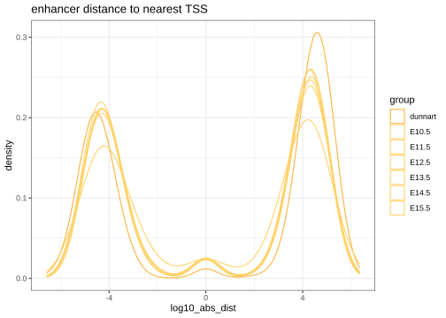
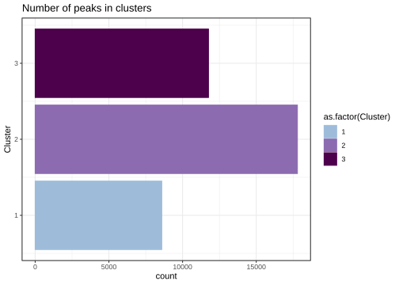

Mouse and dunnart peak features
lecook
2022-03-16
Last updated: 2022-03-29
Checks: 7 0
Knit directory: chipseq-cross-species/
This reproducible R Markdown analysis was created with workflowr (version 1.7.0). The Checks tab describes the reproducibility checks that were applied when the results were created. The Past versions tab lists the development history.
Great! Since the R Markdown file has been committed to the Git repository, you know the exact version of the code that produced these results.
Great job! The global environment was empty. Objects defined in the global environment can affect the analysis in your R Markdown file in unknown ways. For reproduciblity it’s best to always run the code in an empty environment.
The command set.seed(20220209) was run prior to running the code in the R Markdown file. Setting a seed ensures that any results that rely on randomness, e.g. subsampling or permutations, are reproducible.
Great job! Recording the operating system, R version, and package versions is critical for reproducibility.
Nice! There were no cached chunks for this analysis, so you can be confident that you successfully produced the results during this run.
Great job! Using relative paths to the files within your workflowr project makes it easier to run your code on other machines.
Great! You are using Git for version control. Tracking code development and connecting the code version to the results is critical for reproducibility.
The results in this page were generated with repository version 4e3b942. See the Past versions tab to see a history of the changes made to the R Markdown and HTML files.
Note that you need to be careful to ensure that all relevant files for the analysis have been committed to Git prior to generating the results (you can use wflow_publish or wflow_git_commit). workflowr only checks the R Markdown file, but you know if there are other scripts or data files that it depends on. Below is the status of the Git repository when the results were generated:
Ignored files:
Ignored: .RData
Ignored: .Rhistory
Ignored: analysis/.RData
Ignored: analysis/.Rhistory
Ignored: analysis/figure/
Ignored: data/genomic_data/
Ignored: data/geo_submission/
Ignored: output/annotations/
Ignored: output/bam_files/
Ignored: output/filtered_peaks/
Ignored: output/logs/
Ignored: output/peaks/
Ignored: output/plots/
Ignored: output/qc/A-1_input.SeqDepthNorm.bw
Ignored: output/qc/A-1_input.SeqDepthNorm_dunnart_downSampled.bw
Ignored: output/qc/A-1_input.ccurve.txt
Ignored: output/qc/A-1_input.extrap.txt
Ignored: output/qc/A-1_input_R1_trimmed.fastq.gz
Ignored: output/qc/A-1_input_est_lib_complex_metrics.txt
Ignored: output/qc/A-2_H3K4me3.SeqDepthNorm.bw
Ignored: output/qc/A-2_H3K4me3.SeqDepthNorm_dunnart_downSampled.bw
Ignored: output/qc/A-2_H3K4me3.ccurve.txt
Ignored: output/qc/A-2_H3K4me3.extrap.txt
Ignored: output/qc/A-2_H3K4me3_R1_trimmed.fastq.gz
Ignored: output/qc/A-2_H3K4me3_est_lib_complex_metrics.txt
Ignored: output/qc/A-2_H3K4me3_vs_A-1_input.frip_default.txt
Ignored: output/qc/A-2_H3K4me3_vs_A-1_input.frip_default_dunnart_downSampled.txt
Ignored: output/qc/A-2_H3K4me3_vs_A-1_input.frip_p0.01_dunnart_downSampled.txt
Ignored: output/qc/A-3_H3K27ac.SeqDepthNorm.bw
Ignored: output/qc/A-3_H3K27ac.SeqDepthNorm_dunnart_downSampled.bw
Ignored: output/qc/A-3_H3K27ac.ccurve.txt
Ignored: output/qc/A-3_H3K27ac.extrap.txt
Ignored: output/qc/A-3_H3K27ac_R1_trimmed.fastq.gz
Ignored: output/qc/A-3_H3K27ac_est_lib_complex_metrics.txt
Ignored: output/qc/A-3_H3K27ac_vs_A-1_input.frip_default.txt
Ignored: output/qc/A-3_H3K27ac_vs_A-1_input.frip_default_dunnart_downSampled.txt
Ignored: output/qc/A-3_H3K27ac_vs_A-1_input.frip_p0.01_dunnart_downSampled.txt
Ignored: output/qc/B-1_input.SeqDepthNorm.bw
Ignored: output/qc/B-1_input.SeqDepthNorm_dunnart_downSampled.bw
Ignored: output/qc/B-1_input.ccurve.txt
Ignored: output/qc/B-1_input.extrap.txt
Ignored: output/qc/B-1_input_R1_trimmed.fastq.gz
Ignored: output/qc/B-1_input_est_lib_complex_metrics.txt
Ignored: output/qc/B-2_H3K4me3.SeqDepthNorm.bw
Ignored: output/qc/B-2_H3K4me3.SeqDepthNorm_dunnart_downSampled.bw
Ignored: output/qc/B-2_H3K4me3.ccurve.txt
Ignored: output/qc/B-2_H3K4me3.extrap.txt
Ignored: output/qc/B-2_H3K4me3_R1_trimmed.fastq.gz
Ignored: output/qc/B-2_H3K4me3_est_lib_complex_metrics.txt
Ignored: output/qc/B-2_H3K4me3_vs_B-1_input.frip_default.txt
Ignored: output/qc/B-2_H3K4me3_vs_B-1_input.frip_default_dunnart_downSampled.txt
Ignored: output/qc/B-2_H3K4me3_vs_B-1_input.frip_p0.01_dunnart_downSampled.txt
Ignored: output/qc/B-3_H3K27ac.SeqDepthNorm.bw
Ignored: output/qc/B-3_H3K27ac.SeqDepthNorm_dunnart_downSampled.bw
Ignored: output/qc/B-3_H3K27ac.ccurve.txt
Ignored: output/qc/B-3_H3K27ac.extrap.txt
Ignored: output/qc/B-3_H3K27ac_R1_trimmed.fastq.gz
Ignored: output/qc/B-3_H3K27ac_est_lib_complex_metrics.txt
Ignored: output/qc/B-3_H3K27ac_vs_B-1_input.frip_default.txt
Ignored: output/qc/B-3_H3K27ac_vs_B-1_input.frip_default_dunnart_downSampled.txt
Ignored: output/qc/B-3_H3K27ac_vs_B-1_input.frip_p0.01_dunnart_downSampled.txt
Ignored: output/qc/ENCFF011NFM_E12.5_H3K27ac.SeqDepthNorm.bw
Ignored: output/qc/ENCFF011NFM_vs_ENCFF058AUT_E12.5_H3K27ac.frip.txt
Ignored: output/qc/ENCFF011NFM_vs_ENCFF058AUT_E12.5_H3K27ac_downSampled.frip.txt
Ignored: output/qc/ENCFF045IPK_E10.5_H3K4me3.SeqDepthNorm_mouse.bw
Ignored: output/qc/ENCFF045IPK_vs_ENCFF825AVI_E10.5_H3K4me3.frip.txt
Ignored: output/qc/ENCFF045IPK_vs_ENCFF825AVI_E10.5_H3K4me3_downSampled.frip.txt
Ignored: output/qc/ENCFF124TAB_E13.5_H3K4me3.SeqDepthNorm_mouse.bw
Ignored: output/qc/ENCFF124TAB_vs_ENCFF248PGK_E13.5_H3K4me3.frip.txt
Ignored: output/qc/ENCFF124TAB_vs_ENCFF248PGK_E13.5_H3K4me3_downSampled.frip.txt
Ignored: output/qc/ENCFF124UYX_E10.5_H3K4me3.SeqDepthNorm_mouse.bw
Ignored: output/qc/ENCFF124UYX_vs_ENCFF157KEH_E10.5_H3K4me3.frip.txt
Ignored: output/qc/ENCFF124UYX_vs_ENCFF157KEH_E10.5_H3K4me3_downSampled.frip.txt
Ignored: output/qc/ENCFF182ZPF_E12.5_H3K4me3.SeqDepthNorm_mouse.bw
Ignored: output/qc/ENCFF182ZPF_vs_ENCFF203JQV_E12.5_H3K4me3.frip.txt
Ignored: output/qc/ENCFF182ZPF_vs_ENCFF203JQV_E12.5_H3K4me3_downSampled.frip.txt
Ignored: output/qc/ENCFF194ORC_E13.5_H3K27ac.SeqDepthNorm.bw
Ignored: output/qc/ENCFF194ORC_vs_ENCFF117QRC_E13.5_H3K27ac.frip.txt
Ignored: output/qc/ENCFF194ORC_vs_ENCFF117QRC_E13.5_H3K27ac_downSampled.frip.txt
Ignored: output/qc/ENCFF213EBC_E10.5_H3K27ac.SeqDepthNorm.bw
Ignored: output/qc/ENCFF213EBC_vs_ENCFF157KEH_E10.5_H3K27ac.frip.txt
Ignored: output/qc/ENCFF213EBC_vs_ENCFF157KEH_E10.5_H3K27ac_downSampled.frip.txt
Ignored: output/qc/ENCFF258KCR_E15.5_H3K4me3.SeqDepthNorm_mouse.bw
Ignored: output/qc/ENCFF258KCR_vs_ENCFF727QTS_E15.5_H3K4me3.frip.txt
Ignored: output/qc/ENCFF258KCR_vs_ENCFF727QTS_E15.5_H3K4me3_downSampled.frip.txt
Ignored: output/qc/ENCFF290ZNF_E13.5_H3K27ac.SeqDepthNorm.bw
Ignored: output/qc/ENCFF290ZNF_vs_ENCFF248PGK_E13.5_H3K27ac.frip.txt
Ignored: output/qc/ENCFF290ZNF_vs_ENCFF248PGK_E13.5_H3K27ac_downSampled.frip.txt
Ignored: output/qc/ENCFF327VAO_E14.5_H3K27ac.SeqDepthNorm.bw
Ignored: output/qc/ENCFF327VAO_vs_ENCFF784ORI_E14.5_H3K27ac.frip.txt
Ignored: output/qc/ENCFF327VAO_vs_ENCFF784ORI_E14.5_H3K27ac_downSampled.frip.txt
Ignored: output/qc/ENCFF394TZN_E12.5_H3K27ac.SeqDepthNorm.bw
Ignored: output/qc/ENCFF394TZN_vs_ENCFF203JQV_E12.5_H3K27ac.frip.txt
Ignored: output/qc/ENCFF394TZN_vs_ENCFF203JQV_E12.5_H3K27ac_downSampled.frip.txt
Ignored: output/qc/ENCFF401BKM_E15.5_H3K4me3.SeqDepthNorm_mouse.bw
Ignored: output/qc/ENCFF401BKM_vs_ENCFF182XFG_E15.5_H3K4me3.frip.txt
Ignored: output/qc/ENCFF401BKM_vs_ENCFF182XFG_E15.5_H3K4me3_downSampled.frip.txt
Ignored: output/qc/ENCFF485UDC_E13.5_H3K4me3.SeqDepthNorm_mouse.bw
Ignored: output/qc/ENCFF485UDC_vs_ENCFF117QRC_E13.5_H3K4me3.frip.txt
Ignored: output/qc/ENCFF485UDC_vs_ENCFF117QRC_E13.5_H3K4me3_downSampled.frip.txt
Ignored: output/qc/ENCFF512SFE_E11.5_H3K27ac.SeqDepthNorm.bw
Ignored: output/qc/ENCFF512SFE_vs_ENCFF184CUE_E11.5_H3K27ac.frip.txt
Ignored: output/qc/ENCFF512SFE_vs_ENCFF184CUE_E11.5_H3K27ac_downSampled.frip.txt
Ignored: output/qc/ENCFF515PKL_E11.5_H3K27ac.SeqDepthNorm.bw
Ignored: output/qc/ENCFF515PKL_vs_ENCFF376FGM_E11.5_H3K27ac.frip.txt
Ignored: output/qc/ENCFF515PKL_vs_ENCFF376FGM_E11.5_H3K27ac_downSampled.frip.txt
Ignored: output/qc/ENCFF548BRR_E10.5_H3K27ac.SeqDepthNorm.bw
Ignored: output/qc/ENCFF548BRR_vs_ENCFF825AVI_E10.5_H3K27ac.frip.txt
Ignored: output/qc/ENCFF548BRR_vs_ENCFF825AVI_E10.5_H3K27ac_downSampled.frip.txt
Ignored: output/qc/ENCFF584JFB_E15.5_H3K27ac.SeqDepthNorm.bw
Ignored: output/qc/ENCFF584JFB_vs_ENCFF727QTS_E15.5_H3K27ac.frip.txt
Ignored: output/qc/ENCFF584JFB_vs_ENCFF727QTS_E15.5_H3K27ac_downSampled.frip.txt
Ignored: output/qc/ENCFF665QBJ_E14.5_H3K4me3.SeqDepthNorm_mouse.bw
Ignored: output/qc/ENCFF665QBJ_vs_ENCFF002HZV_E14.5_H3K4me3.frip.txt
Ignored: output/qc/ENCFF665QBJ_vs_ENCFF002HZV_E14.5_H3K4me3_downSampled.frip.txt
Ignored: output/qc/ENCFF707WKL_E15.5_H3K27ac.SeqDepthNorm.bw
Ignored: output/qc/ENCFF707WKL_vs_ENCFF182XFG_E15.5_H3K27ac.frip.txt
Ignored: output/qc/ENCFF707WKL_vs_ENCFF182XFG_E15.5_H3K27ac_downSampled.frip.txt
Ignored: output/qc/ENCFF717QDV_E11.5_H3K4me3.SeqDepthNorm_mouse.bw
Ignored: output/qc/ENCFF717QDV_vs_ENCFF376FGM_E11.5_H3K4me3.frip.txt
Ignored: output/qc/ENCFF717QDV_vs_ENCFF376FGM_E11.5_H3K4me3_downSampled.frip.txt
Ignored: output/qc/ENCFF724DMU_E14.5_H3K4me3.SeqDepthNorm_mouse.bw
Ignored: output/qc/ENCFF724DMU_vs_ENCFF784ORI_E14.5_H3K4me3.frip.txt
Ignored: output/qc/ENCFF724DMU_vs_ENCFF784ORI_E14.5_H3K4me3_downSampled.frip.txt
Ignored: output/qc/ENCFF760QYZ_E11.5_H3K4me3.SeqDepthNorm_mouse.bw
Ignored: output/qc/ENCFF760QYZ_vs_ENCFF184CUE_E11.5_H3K4me3.frip.txt
Ignored: output/qc/ENCFF760QYZ_vs_ENCFF184CUE_E11.5_H3K4me3_downSampled.frip.txt
Ignored: output/qc/ENCFF902HAR_E14.5_H3K27ac.SeqDepthNorm.bw
Ignored: output/qc/ENCFF902HAR_vs_ENCFF002HZV_E14.5_H3K27ac.frip.txt
Ignored: output/qc/ENCFF902HAR_vs_ENCFF002HZV_E14.5_H3K27ac_downSampled.frip.txt
Ignored: output/qc/ENCFF941QJZ_E12.5_H3K4me3.SeqDepthNorm_mouse.bw
Ignored: output/qc/ENCFF941QJZ_vs_ENCFF058AUT_E12.5_H3K4me3.frip.txt
Ignored: output/qc/ENCFF941QJZ_vs_ENCFF058AUT_E12.5_H3K4me3_downSampled.frip.txt
Ignored: output/qc/H3K27ac_multibamsum.npz
Ignored: output/qc/H3K27ac_multibamsum.tab
Ignored: output/qc/H3K27ac_multibamsum_mouse.npz
Ignored: output/qc/H3K27ac_multibamsum_mouse.txt
Ignored: output/qc/H3K27ac_pearsoncor_multibamsum_matrix_mouse.txt
Ignored: output/qc/H3K4me3_multibamsum_mouse.npz
Ignored: output/qc/H3K4me3_multibamsum_mouse.txt
Ignored: output/qc/H3K4me3_pearsoncor_multibamsum_matrix_mouse.txt
Ignored: output/qc/bamPEFragmentSize_rawcounts.tab
Ignored: output/qc/bamPEFragmentSize_rawcounts_dunnart_downSampled.tab
Ignored: output/qc/multiBAM_fingerprint_metrics.txt
Ignored: output/qc/multiBAM_fingerprint_metrics_dunnart_downSampled.txt
Ignored: output/qc/multiBAM_fingerprint_rawcounts.txt
Ignored: output/qc/multiBAM_fingerprint_rawcounts_dunnart_downSampled.txt
Ignored: output/qc/multibamsum.npz
Ignored: output/qc/multibamsum.tab
Ignored: output/qc/multibamsum_dunnart_downSampled.npz
Ignored: output/qc/multibamsum_dunnart_downSampled.tab
Ignored: output/qc/multibamsum_mouse.npz
Ignored: output/qc/multibamsum_mouse.tab
Ignored: output/qc/pearsoncor_multibamsum_matrix.txt
Ignored: output/qc/pearsoncor_multibamsum_matrix_dunnart_downSampled.txt
Ignored: output/qc/pearsoncor_multibamsum_matrix_mouse.txt
Ignored: output/wga/
Untracked files:
Untracked: .snakemake/
Untracked: 0.264065342796133.clean.pos
Untracked: 0.264065342796133.gtf.tss
Untracked: 0.264065342796133.pos
Untracked: 0.264065342796133.seq
Untracked: 0.264065342796133.tmp
Untracked: Rplots.pdf
Untracked: data/raw_reads/
Untracked: df2.Robj
Untracked: df3.Robj
Untracked: output/qc/A-1_input.downSampled.flagstat.qc
Untracked: output/qc/A-2_H3K4me3.downSampled.flagstat.qc
Untracked: output/qc/A-3_H3K27ac.downSampled.flagstat.qc
Untracked: output/qc/B-1_input.downSampled.flagstat.qc
Untracked: output/qc/B-2_H3K4me3.downSampled.flagstat.qc
Untracked: output/qc/B-3_H3K27ac.downSampled.flagstat.qc
Untracked: output/qc/E10.5_H3K27ac.pooled.macs2
Untracked: output/qc/E10.5_H3K27ac.pooled.macs2_downSampled
Untracked: output/qc/E10.5_H3K4me3.pooled.macs2
Untracked: output/qc/E10.5_H3K4me3.pooled.macs2_downSampled
Untracked: output/qc/E10.5_H3K4me3.pooled.macs2_downSampled.log
Untracked: output/qc/E11.5_H3K27ac.pooled.macs2
Untracked: output/qc/E11.5_H3K27ac.pooled.macs2_downSampled
Untracked: output/qc/E11.5_H3K4me3.pooled.macs2
Untracked: output/qc/E11.5_H3K4me3.pooled.macs2_downSampled
Untracked: output/qc/E11.5_H3K4me3.pooled.macs2_downSampled.log
Untracked: output/qc/E12.5_H3K27ac.pooled.macs2
Untracked: output/qc/E12.5_H3K27ac.pooled.macs2_downSampled
Untracked: output/qc/E12.5_H3K4me3.pooled.macs2
Untracked: output/qc/E12.5_H3K4me3.pooled.macs2_downSampled
Untracked: output/qc/E12.5_H3K4me3.pooled.macs2_downSampled.log
Untracked: output/qc/E13.5_H3K27ac.pooled.macs2
Untracked: output/qc/E13.5_H3K27ac.pooled.macs2_downSampled
Untracked: output/qc/E13.5_H3K4me3.pooled.macs2
Untracked: output/qc/E13.5_H3K4me3.pooled.macs2_downSampled
Untracked: output/qc/E13.5_H3K4me3.pooled.macs2_downSampled.log
Untracked: output/qc/E14.5_H3K27ac.pooled.macs2
Untracked: output/qc/E14.5_H3K27ac.pooled.macs2_downSampled
Untracked: output/qc/E14.5_H3K4me3.pooled.macs2
Untracked: output/qc/E14.5_H3K4me3.pooled.macs2_downSampled
Untracked: output/qc/E14.5_H3K4me3.pooled.macs2_downSampled.log
Untracked: output/qc/E15.5_H3K27ac.pooled.macs2
Untracked: output/qc/E15.5_H3K27ac.pooled.macs2_downSampled
Untracked: output/qc/E15.5_H3K4me3.pooled.macs2
Untracked: output/qc/E15.5_H3K4me3.pooled.macs2_downSampled
Untracked: output/qc/E15.5_H3K4me3.pooled.macs2_downSampled.log
Untracked: output/qc/ENCFF002HZV_E14.5_H3K27ac.dupmark.qc
Untracked: output/qc/ENCFF002HZV_E14.5_H3K4me3.dupmark.qc
Untracked: output/qc/ENCFF011NFM_E12.5_H3K27ac.dedup.flagstat.qc
Untracked: output/qc/ENCFF011NFM_E12.5_H3K27ac.downSampled.flagstat.qc
Untracked: output/qc/ENCFF011NFM_E12.5_H3K27ac.dupmark.flagstat.qc
Untracked: output/qc/ENCFF011NFM_E12.5_H3K27ac.dupmark.qc
Untracked: output/qc/ENCFF011NFM_E12.5_H3K27ac.pbc.qc
Untracked: output/qc/ENCFF011NFM_E12.5_H3K27ac.q30.flagstat.qc
Untracked: output/qc/ENCFF011NFM_E12.5_H3K27ac.unfiltered.flagstat.qc
Untracked: output/qc/ENCFF011NFM_E12.5_H3K27ac_filt_15Mreads.SE.cc.plot.pdf
Untracked: output/qc/ENCFF011NFM_E12.5_H3K27ac_filt_15Mreads.SE.cc.qc
Untracked: output/qc/ENCFF045IPK_E10.5_H3K4me3.dedup.flagstat.qc
Untracked: output/qc/ENCFF045IPK_E10.5_H3K4me3.downSampled.flagstat.qc
Untracked: output/qc/ENCFF045IPK_E10.5_H3K4me3.dupmark.flagstat.qc
Untracked: output/qc/ENCFF045IPK_E10.5_H3K4me3.dupmark.qc
Untracked: output/qc/ENCFF045IPK_E10.5_H3K4me3.pbc.qc
Untracked: output/qc/ENCFF045IPK_E10.5_H3K4me3.q30.flagstat.qc
Untracked: output/qc/ENCFF045IPK_E10.5_H3K4me3.unfiltered.flagstat.qc
Untracked: output/qc/ENCFF045IPK_E10.5_H3K4me3_filt_15Mreads.SE.cc.plot.pdf
Untracked: output/qc/ENCFF045IPK_E10.5_H3K4me3_filt_15Mreads.SE.cc.qc
Untracked: output/qc/ENCFF058AUT_E12.5_H3K27ac.dupmark.qc
Untracked: output/qc/ENCFF058AUT_E12.5_H3K4me3.dupmark.qc
Untracked: output/qc/ENCFF117QRC_E13.5_H3K27ac.dupmark.qc
Untracked: output/qc/ENCFF117QRC_E13.5_H3K4me3.dupmark.qc
Untracked: output/qc/ENCFF124TAB_E13.5_H3K4me3.dedup.flagstat.qc
Untracked: output/qc/ENCFF124TAB_E13.5_H3K4me3.downSampled.flagstat.qc
Untracked: output/qc/ENCFF124TAB_E13.5_H3K4me3.dupmark.flagstat.qc
Untracked: output/qc/ENCFF124TAB_E13.5_H3K4me3.dupmark.qc
Untracked: output/qc/ENCFF124TAB_E13.5_H3K4me3.pbc.qc
Untracked: output/qc/ENCFF124TAB_E13.5_H3K4me3.q30.flagstat.qc
Untracked: output/qc/ENCFF124TAB_E13.5_H3K4me3.unfiltered.flagstat.qc
Untracked: output/qc/ENCFF124TAB_E13.5_H3K4me3_filt_15Mreads.SE.cc.plot.pdf
Untracked: output/qc/ENCFF124TAB_E13.5_H3K4me3_filt_15Mreads.SE.cc.qc
Untracked: output/qc/ENCFF124UYX_E10.5_H3K4me3.dedup.flagstat.qc
Untracked: output/qc/ENCFF124UYX_E10.5_H3K4me3.downSampled.flagstat.qc
Untracked: output/qc/ENCFF124UYX_E10.5_H3K4me3.dupmark.flagstat.qc
Untracked: output/qc/ENCFF124UYX_E10.5_H3K4me3.dupmark.qc
Untracked: output/qc/ENCFF124UYX_E10.5_H3K4me3.pbc.qc
Untracked: output/qc/ENCFF124UYX_E10.5_H3K4me3.q30.flagstat.qc
Untracked: output/qc/ENCFF124UYX_E10.5_H3K4me3.unfiltered.flagstat.qc
Untracked: output/qc/ENCFF124UYX_E10.5_H3K4me3_filt_15Mreads.SE.cc.plot.pdf
Untracked: output/qc/ENCFF124UYX_E10.5_H3K4me3_filt_15Mreads.SE.cc.qc
Untracked: output/qc/ENCFF157KEH_E10.5_H3K27ac.dupmark.qc
Untracked: output/qc/ENCFF157KEH_E10.5_H3K4me3.dupmark.qc
Untracked: output/qc/ENCFF182XFG_E15.5_H3K27ac.dupmark.qc
Untracked: output/qc/ENCFF182XFG_E15.5_H3K4me3.dupmark.qc
Untracked: output/qc/ENCFF182ZPF_E12.5_H3K4me3.dedup.flagstat.qc
Untracked: output/qc/ENCFF182ZPF_E12.5_H3K4me3.downSampled.flagstat.qc
Untracked: output/qc/ENCFF182ZPF_E12.5_H3K4me3.dupmark.flagstat.qc
Untracked: output/qc/ENCFF182ZPF_E12.5_H3K4me3.dupmark.qc
Untracked: output/qc/ENCFF182ZPF_E12.5_H3K4me3.pbc.qc
Untracked: output/qc/ENCFF182ZPF_E12.5_H3K4me3.q30.flagstat.qc
Untracked: output/qc/ENCFF182ZPF_E12.5_H3K4me3.unfiltered.flagstat.qc
Untracked: output/qc/ENCFF182ZPF_E12.5_H3K4me3_filt_15Mreads.SE.cc.plot.pdf
Untracked: output/qc/ENCFF182ZPF_E12.5_H3K4me3_filt_15Mreads.SE.cc.qc
Untracked: output/qc/ENCFF184CUE_E11.5_H3K27ac.dupmark.qc
Untracked: output/qc/ENCFF184CUE_E11.5_H3K4me3.dupmark.qc
Untracked: output/qc/ENCFF194ORC_E13.5_H3K27ac.dedup.flagstat.qc
Untracked: output/qc/ENCFF194ORC_E13.5_H3K27ac.downSampled.flagstat.qc
Untracked: output/qc/ENCFF194ORC_E13.5_H3K27ac.dupmark.flagstat.qc
Untracked: output/qc/ENCFF194ORC_E13.5_H3K27ac.dupmark.qc
Untracked: output/qc/ENCFF194ORC_E13.5_H3K27ac.pbc.qc
Untracked: output/qc/ENCFF194ORC_E13.5_H3K27ac.q30.flagstat.qc
Untracked: output/qc/ENCFF194ORC_E13.5_H3K27ac.unfiltered.flagstat.qc
Untracked: output/qc/ENCFF194ORC_E13.5_H3K27ac_filt_15Mreads.SE.cc.plot.pdf
Untracked: output/qc/ENCFF194ORC_E13.5_H3K27ac_filt_15Mreads.SE.cc.qc
Untracked: output/qc/ENCFF203JQV_E12.5_H3K27ac.dupmark.qc
Untracked: output/qc/ENCFF203JQV_E12.5_H3K4me3.dupmark.qc
Untracked: output/qc/ENCFF213EBC_E10.5_H3K27ac.dedup.flagstat.qc
Untracked: output/qc/ENCFF213EBC_E10.5_H3K27ac.downSampled.flagstat.qc
Untracked: output/qc/ENCFF213EBC_E10.5_H3K27ac.dupmark.flagstat.qc
Untracked: output/qc/ENCFF213EBC_E10.5_H3K27ac.dupmark.qc
Untracked: output/qc/ENCFF213EBC_E10.5_H3K27ac.pbc.qc
Untracked: output/qc/ENCFF213EBC_E10.5_H3K27ac.q30.flagstat.qc
Untracked: output/qc/ENCFF213EBC_E10.5_H3K27ac.unfiltered.flagstat.qc
Untracked: output/qc/ENCFF213EBC_E10.5_H3K27ac_filt_15Mreads.SE.cc.plot.pdf
Untracked: output/qc/ENCFF213EBC_E10.5_H3K27ac_filt_15Mreads.SE.cc.qc
Untracked: output/qc/ENCFF248PGK_E13.5_H3K27ac.dupmark.qc
Untracked: output/qc/ENCFF248PGK_E13.5_H3K4me3.dupmark.qc
Untracked: output/qc/ENCFF258KCR_E15.5_H3K4me3.dedup.flagstat.qc
Untracked: output/qc/ENCFF258KCR_E15.5_H3K4me3.downSampled.flagstat.qc
Untracked: output/qc/ENCFF258KCR_E15.5_H3K4me3.dupmark.flagstat.qc
Untracked: output/qc/ENCFF258KCR_E15.5_H3K4me3.dupmark.qc
Untracked: output/qc/ENCFF258KCR_E15.5_H3K4me3.pbc.qc
Untracked: output/qc/ENCFF258KCR_E15.5_H3K4me3.q30.flagstat.qc
Untracked: output/qc/ENCFF258KCR_E15.5_H3K4me3.unfiltered.flagstat.qc
Untracked: output/qc/ENCFF258KCR_E15.5_H3K4me3_filt_15Mreads.SE.cc.plot.pdf
Untracked: output/qc/ENCFF258KCR_E15.5_H3K4me3_filt_15Mreads.SE.cc.qc
Untracked: output/qc/ENCFF290ZNF_E13.5_H3K27ac.dedup.flagstat.qc
Untracked: output/qc/ENCFF290ZNF_E13.5_H3K27ac.downSampled.flagstat.qc
Untracked: output/qc/ENCFF290ZNF_E13.5_H3K27ac.dupmark.flagstat.qc
Untracked: output/qc/ENCFF290ZNF_E13.5_H3K27ac.dupmark.qc
Untracked: output/qc/ENCFF290ZNF_E13.5_H3K27ac.pbc.qc
Untracked: output/qc/ENCFF290ZNF_E13.5_H3K27ac.q30.flagstat.qc
Untracked: output/qc/ENCFF290ZNF_E13.5_H3K27ac.unfiltered.flagstat.qc
Untracked: output/qc/ENCFF290ZNF_E13.5_H3K27ac_filt_15Mreads.SE.cc.plot.pdf
Untracked: output/qc/ENCFF290ZNF_E13.5_H3K27ac_filt_15Mreads.SE.cc.qc
Untracked: output/qc/ENCFF327VAO_E14.5_H3K27ac.dedup.flagstat.qc
Untracked: output/qc/ENCFF327VAO_E14.5_H3K27ac.downSampled.flagstat.qc
Untracked: output/qc/ENCFF327VAO_E14.5_H3K27ac.dupmark.flagstat.qc
Untracked: output/qc/ENCFF327VAO_E14.5_H3K27ac.dupmark.qc
Untracked: output/qc/ENCFF327VAO_E14.5_H3K27ac.pbc.qc
Untracked: output/qc/ENCFF327VAO_E14.5_H3K27ac.q30.flagstat.qc
Untracked: output/qc/ENCFF327VAO_E14.5_H3K27ac.unfiltered.flagstat.qc
Untracked: output/qc/ENCFF327VAO_E14.5_H3K27ac_filt_15Mreads.SE.cc.plot.pdf
Untracked: output/qc/ENCFF327VAO_E14.5_H3K27ac_filt_15Mreads.SE.cc.qc
Untracked: output/qc/ENCFF376FGM_E11.5_H3K27ac.dupmark.qc
Untracked: output/qc/ENCFF376FGM_E11.5_H3K4me3.dupmark.qc
Untracked: output/qc/ENCFF394TZN_E12.5_H3K27ac.dedup.flagstat.qc
Untracked: output/qc/ENCFF394TZN_E12.5_H3K27ac.downSampled.flagstat.qc
Untracked: output/qc/ENCFF394TZN_E12.5_H3K27ac.dupmark.flagstat.qc
Untracked: output/qc/ENCFF394TZN_E12.5_H3K27ac.dupmark.qc
Untracked: output/qc/ENCFF394TZN_E12.5_H3K27ac.pbc.qc
Untracked: output/qc/ENCFF394TZN_E12.5_H3K27ac.q30.flagstat.qc
Untracked: output/qc/ENCFF394TZN_E12.5_H3K27ac.unfiltered.flagstat.qc
Untracked: output/qc/ENCFF394TZN_E12.5_H3K27ac_filt_15Mreads.SE.cc.plot.pdf
Untracked: output/qc/ENCFF394TZN_E12.5_H3K27ac_filt_15Mreads.SE.cc.qc
Untracked: output/qc/ENCFF401BKM_E15.5_H3K4me3.dedup.flagstat.qc
Untracked: output/qc/ENCFF401BKM_E15.5_H3K4me3.downSampled.flagstat.qc
Untracked: output/qc/ENCFF401BKM_E15.5_H3K4me3.dupmark.flagstat.qc
Untracked: output/qc/ENCFF401BKM_E15.5_H3K4me3.dupmark.qc
Untracked: output/qc/ENCFF401BKM_E15.5_H3K4me3.pbc.qc
Untracked: output/qc/ENCFF401BKM_E15.5_H3K4me3.q30.flagstat.qc
Untracked: output/qc/ENCFF401BKM_E15.5_H3K4me3.unfiltered.flagstat.qc
Untracked: output/qc/ENCFF401BKM_E15.5_H3K4me3_filt_15Mreads.SE.cc.plot.pdf
Untracked: output/qc/ENCFF401BKM_E15.5_H3K4me3_filt_15Mreads.SE.cc.qc
Untracked: output/qc/ENCFF485UDC_E13.5_H3K4me3.dedup.flagstat.qc
Untracked: output/qc/ENCFF485UDC_E13.5_H3K4me3.downSampled.flagstat.qc
Untracked: output/qc/ENCFF485UDC_E13.5_H3K4me3.dupmark.flagstat.qc
Untracked: output/qc/ENCFF485UDC_E13.5_H3K4me3.dupmark.qc
Untracked: output/qc/ENCFF485UDC_E13.5_H3K4me3.pbc.qc
Untracked: output/qc/ENCFF485UDC_E13.5_H3K4me3.q30.flagstat.qc
Untracked: output/qc/ENCFF485UDC_E13.5_H3K4me3.unfiltered.flagstat.qc
Untracked: output/qc/ENCFF485UDC_E13.5_H3K4me3_filt_15Mreads.SE.cc.plot.pdf
Untracked: output/qc/ENCFF485UDC_E13.5_H3K4me3_filt_15Mreads.SE.cc.qc
Untracked: output/qc/ENCFF512SFE_E11.5_H3K27ac.dedup.flagstat.qc
Untracked: output/qc/ENCFF512SFE_E11.5_H3K27ac.downSampled.flagstat.qc
Untracked: output/qc/ENCFF512SFE_E11.5_H3K27ac.dupmark.flagstat.qc
Untracked: output/qc/ENCFF512SFE_E11.5_H3K27ac.dupmark.qc
Untracked: output/qc/ENCFF512SFE_E11.5_H3K27ac.pbc.qc
Untracked: output/qc/ENCFF512SFE_E11.5_H3K27ac.q30.flagstat.qc
Untracked: output/qc/ENCFF512SFE_E11.5_H3K27ac.unfiltered.flagstat.qc
Untracked: output/qc/ENCFF512SFE_E11.5_H3K27ac_filt_15Mreads.SE.cc.plot.pdf
Untracked: output/qc/ENCFF512SFE_E11.5_H3K27ac_filt_15Mreads.SE.cc.qc
Untracked: output/qc/ENCFF515PKL_E11.5_H3K27ac.dedup.flagstat.qc
Untracked: output/qc/ENCFF515PKL_E11.5_H3K27ac.downSampled.flagstat.qc
Untracked: output/qc/ENCFF515PKL_E11.5_H3K27ac.dupmark.flagstat.qc
Untracked: output/qc/ENCFF515PKL_E11.5_H3K27ac.dupmark.qc
Untracked: output/qc/ENCFF515PKL_E11.5_H3K27ac.pbc.qc
Untracked: output/qc/ENCFF515PKL_E11.5_H3K27ac.q30.flagstat.qc
Untracked: output/qc/ENCFF515PKL_E11.5_H3K27ac.unfiltered.flagstat.qc
Untracked: output/qc/ENCFF515PKL_E11.5_H3K27ac_filt_15Mreads.SE.cc.plot.pdf
Untracked: output/qc/ENCFF515PKL_E11.5_H3K27ac_filt_15Mreads.SE.cc.qc
Untracked: output/qc/ENCFF548BRR_E10.5_H3K27ac.dedup.flagstat.qc
Untracked: output/qc/ENCFF548BRR_E10.5_H3K27ac.downSampled.flagstat.qc
Untracked: output/qc/ENCFF548BRR_E10.5_H3K27ac.dupmark.flagstat.qc
Untracked: output/qc/ENCFF548BRR_E10.5_H3K27ac.dupmark.qc
Untracked: output/qc/ENCFF548BRR_E10.5_H3K27ac.pbc.qc
Untracked: output/qc/ENCFF548BRR_E10.5_H3K27ac.q30.flagstat.qc
Untracked: output/qc/ENCFF548BRR_E10.5_H3K27ac.unfiltered.flagstat.qc
Untracked: output/qc/ENCFF548BRR_E10.5_H3K27ac_filt_15Mreads.SE.cc.plot.pdf
Untracked: output/qc/ENCFF548BRR_E10.5_H3K27ac_filt_15Mreads.SE.cc.qc
Untracked: output/qc/ENCFF584JFB_E15.5_H3K27ac.dedup.flagstat.qc
Untracked: output/qc/ENCFF584JFB_E15.5_H3K27ac.downSampled.flagstat.qc
Untracked: output/qc/ENCFF584JFB_E15.5_H3K27ac.dupmark.flagstat.qc
Untracked: output/qc/ENCFF584JFB_E15.5_H3K27ac.dupmark.qc
Untracked: output/qc/ENCFF584JFB_E15.5_H3K27ac.pbc.qc
Untracked: output/qc/ENCFF584JFB_E15.5_H3K27ac.q30.flagstat.qc
Untracked: output/qc/ENCFF584JFB_E15.5_H3K27ac.unfiltered.flagstat.qc
Untracked: output/qc/ENCFF584JFB_E15.5_H3K27ac_filt_15Mreads.SE.cc.plot.pdf
Untracked: output/qc/ENCFF584JFB_E15.5_H3K27ac_filt_15Mreads.SE.cc.qc
Untracked: output/qc/ENCFF665QBJ_E14.5_H3K4me3.dedup.flagstat.qc
Untracked: output/qc/ENCFF665QBJ_E14.5_H3K4me3.downSampled.flagstat.qc
Untracked: output/qc/ENCFF665QBJ_E14.5_H3K4me3.dupmark.flagstat.qc
Untracked: output/qc/ENCFF665QBJ_E14.5_H3K4me3.dupmark.qc
Untracked: output/qc/ENCFF665QBJ_E14.5_H3K4me3.pbc.qc
Untracked: output/qc/ENCFF665QBJ_E14.5_H3K4me3.q30.flagstat.qc
Untracked: output/qc/ENCFF665QBJ_E14.5_H3K4me3.unfiltered.flagstat.qc
Untracked: output/qc/ENCFF665QBJ_E14.5_H3K4me3_filt_15Mreads.SE.cc.plot.pdf
Untracked: output/qc/ENCFF665QBJ_E14.5_H3K4me3_filt_15Mreads.SE.cc.qc
Untracked: output/qc/ENCFF707WKL_E15.5_H3K27ac.dedup.flagstat.qc
Untracked: output/qc/ENCFF707WKL_E15.5_H3K27ac.downSampled.flagstat.qc
Untracked: output/qc/ENCFF707WKL_E15.5_H3K27ac.dupmark.flagstat.qc
Untracked: output/qc/ENCFF707WKL_E15.5_H3K27ac.dupmark.qc
Untracked: output/qc/ENCFF707WKL_E15.5_H3K27ac.pbc.qc
Untracked: output/qc/ENCFF707WKL_E15.5_H3K27ac.q30.flagstat.qc
Untracked: output/qc/ENCFF707WKL_E15.5_H3K27ac.unfiltered.flagstat.qc
Untracked: output/qc/ENCFF707WKL_E15.5_H3K27ac_filt_15Mreads.SE.cc.plot.pdf
Untracked: output/qc/ENCFF707WKL_E15.5_H3K27ac_filt_15Mreads.SE.cc.qc
Untracked: output/qc/ENCFF717QDV_E11.5_H3K4me3.dedup.flagstat.qc
Untracked: output/qc/ENCFF717QDV_E11.5_H3K4me3.downSampled.flagstat.qc
Untracked: output/qc/ENCFF717QDV_E11.5_H3K4me3.dupmark.flagstat.qc
Untracked: output/qc/ENCFF717QDV_E11.5_H3K4me3.dupmark.qc
Untracked: output/qc/ENCFF717QDV_E11.5_H3K4me3.pbc.qc
Untracked: output/qc/ENCFF717QDV_E11.5_H3K4me3.q30.flagstat.qc
Untracked: output/qc/ENCFF717QDV_E11.5_H3K4me3.unfiltered.flagstat.qc
Untracked: output/qc/ENCFF717QDV_E11.5_H3K4me3_filt_15Mreads.SE.cc.plot.pdf
Untracked: output/qc/ENCFF717QDV_E11.5_H3K4me3_filt_15Mreads.SE.cc.qc
Untracked: output/qc/ENCFF724DMU_E14.5_H3K4me3.dedup.flagstat.qc
Untracked: output/qc/ENCFF724DMU_E14.5_H3K4me3.downSampled.flagstat.qc
Untracked: output/qc/ENCFF724DMU_E14.5_H3K4me3.dupmark.flagstat.qc
Untracked: output/qc/ENCFF724DMU_E14.5_H3K4me3.dupmark.qc
Untracked: output/qc/ENCFF724DMU_E14.5_H3K4me3.pbc.qc
Untracked: output/qc/ENCFF724DMU_E14.5_H3K4me3.q30.flagstat.qc
Untracked: output/qc/ENCFF724DMU_E14.5_H3K4me3.unfiltered.flagstat.qc
Untracked: output/qc/ENCFF724DMU_E14.5_H3K4me3_filt_15Mreads.SE.cc.plot.pdf
Untracked: output/qc/ENCFF724DMU_E14.5_H3K4me3_filt_15Mreads.SE.cc.qc
Untracked: output/qc/ENCFF727QTS_E15.5_H3K27ac.dupmark.qc
Untracked: output/qc/ENCFF727QTS_E15.5_H3K4me3.dupmark.qc
Untracked: output/qc/ENCFF760QYZ_E11.5_H3K4me3.dedup.flagstat.qc
Untracked: output/qc/ENCFF760QYZ_E11.5_H3K4me3.downSampled.flagstat.qc
Untracked: output/qc/ENCFF760QYZ_E11.5_H3K4me3.dupmark.flagstat.qc
Untracked: output/qc/ENCFF760QYZ_E11.5_H3K4me3.dupmark.qc
Untracked: output/qc/ENCFF760QYZ_E11.5_H3K4me3.pbc.qc
Untracked: output/qc/ENCFF760QYZ_E11.5_H3K4me3.q30.flagstat.qc
Untracked: output/qc/ENCFF760QYZ_E11.5_H3K4me3.unfiltered.flagstat.qc
Untracked: output/qc/ENCFF760QYZ_E11.5_H3K4me3_filt_15Mreads.SE.cc.plot.pdf
Untracked: output/qc/ENCFF760QYZ_E11.5_H3K4me3_filt_15Mreads.SE.cc.qc
Untracked: output/qc/ENCFF784ORI_E14.5_H3K27ac.dupmark.qc
Untracked: output/qc/ENCFF784ORI_E14.5_H3K4me3.dupmark.qc
Untracked: output/qc/ENCFF825AVI_E10.5_H3K27ac.dupmark.qc
Untracked: output/qc/ENCFF825AVI_E10.5_H3K4me3.dupmark.qc
Untracked: output/qc/ENCFF902HAR_E14.5_H3K27ac.dedup.flagstat.qc
Untracked: output/qc/ENCFF902HAR_E14.5_H3K27ac.downSampled.flagstat.qc
Untracked: output/qc/ENCFF902HAR_E14.5_H3K27ac.dupmark.flagstat.qc
Untracked: output/qc/ENCFF902HAR_E14.5_H3K27ac.dupmark.qc
Untracked: output/qc/ENCFF902HAR_E14.5_H3K27ac.pbc.qc
Untracked: output/qc/ENCFF902HAR_E14.5_H3K27ac.q30.flagstat.qc
Untracked: output/qc/ENCFF902HAR_E14.5_H3K27ac.unfiltered.flagstat.qc
Untracked: output/qc/ENCFF902HAR_E14.5_H3K27ac_filt_15Mreads.SE.cc.plot.pdf
Untracked: output/qc/ENCFF902HAR_E14.5_H3K27ac_filt_15Mreads.SE.cc.qc
Untracked: output/qc/ENCFF941QJZ_E12.5_H3K4me3.dedup.flagstat.qc
Untracked: output/qc/ENCFF941QJZ_E12.5_H3K4me3.downSampled.flagstat.qc
Untracked: output/qc/ENCFF941QJZ_E12.5_H3K4me3.dupmark.flagstat.qc
Untracked: output/qc/ENCFF941QJZ_E12.5_H3K4me3.dupmark.qc
Untracked: output/qc/ENCFF941QJZ_E12.5_H3K4me3.pbc.qc
Untracked: output/qc/ENCFF941QJZ_E12.5_H3K4me3.q30.flagstat.qc
Untracked: output/qc/ENCFF941QJZ_E12.5_H3K4me3.unfiltered.flagstat.qc
Untracked: output/qc/ENCFF941QJZ_E12.5_H3K4me3_filt_15Mreads.SE.cc.plot.pdf
Untracked: output/qc/ENCFF941QJZ_E12.5_H3K4me3_filt_15Mreads.SE.cc.qc
Untracked: output/qc/H3K27ac_E10.5_overlap.frip
Untracked: output/qc/H3K27ac_E10.5_overlap_downSampled.frip
Untracked: output/qc/H3K27ac_E11.5_overlap.frip
Untracked: output/qc/H3K27ac_E12.5_overlap.frip
Untracked: output/qc/H3K27ac_E13.5_overlap.frip
Untracked: output/qc/H3K27ac_E14.5_overlap.frip
Untracked: output/qc/H3K27ac_E15.5_overlap.frip
Untracked: output/qc/H3K27ac_overlap_default.frip
Untracked: output/qc/H3K27ac_overlap_default_dunnart_downSampled.frip
Untracked: output/qc/H3K4me3_E10.5_overlap.frip
Untracked: output/qc/H3K4me3_E10.5_overlap_downSampled.frip
Untracked: output/qc/H3K4me3_E11.5_overlap.frip
Untracked: output/qc/H3K4me3_E11.5_overlap_downSampled.frip
Untracked: output/qc/H3K4me3_E12.5_overlap.frip
Untracked: output/qc/H3K4me3_E12.5_overlap_downSampled.frip
Untracked: output/qc/H3K4me3_E13.5_overlap.frip
Untracked: output/qc/H3K4me3_E13.5_overlap_downSampled.frip
Untracked: output/qc/H3K4me3_E14.5_overlap.frip
Untracked: output/qc/H3K4me3_E14.5_overlap_downSampled.frip
Untracked: output/qc/H3K4me3_E15.5_overlap.frip
Untracked: output/qc/H3K4me3_E15.5_overlap_downSampled.frip
Untracked: output/qc/H3K4me3_overlap_default_dunnart_downSampled.frip
Untracked: output/qc/H3K4me3_overlap_p0.01_dunnart_downSampled.frip
Untracked: output/qc/slurmjob.stderr
Untracked: output/qc/slurmjob.stdout
Untracked: output/qc/ucsc_alignment/
Untracked: output/rnaseq/
Untracked: slurmjob.stderr
Untracked: slurmjob.stdout
Unstaged changes:
Modified: analysis/peak_level_comparisons.Rmd
Modified: code/basic_wrapper.slurm
Modified: output/qc/A-1_input.PPq30.flagstat.qc
Modified: output/qc/A-1_input.dedup.flagstat.qc
Modified: output/qc/A-1_input.dupmark.flagstat.qc
Modified: output/qc/A-1_input.unfiltered.flagstat.qc
Modified: output/qc/A-3_H3K27ac.PPq30.flagstat.qc
Modified: output/qc/A-3_H3K27ac.dedup.flagstat.qc
Modified: output/qc/A-3_H3K27ac.dupmark.flagstat.qc
Modified: output/qc/A-3_H3K27ac.unfiltered.flagstat.qc
Modified: output/qc/B-1_input.PPq30.flagstat.qc
Modified: output/qc/B-1_input.dedup.flagstat.qc
Modified: output/qc/B-1_input.dupmark.flagstat.qc
Modified: output/qc/B-1_input.unfiltered.flagstat.qc
Modified: output/qc/H3K4me3_overlap_default.frip
Note that any generated files, e.g. HTML, png, CSS, etc., are not included in this status report because it is ok for generated content to have uncommitted changes.
These are the previous versions of the repository in which changes were made to the R Markdown (analysis/mouse_dunnart_peak_features.Rmd) and HTML (docs/mouse_dunnart_peak_features.html) files. If you’ve configured a remote Git repository (see ?wflow_git_remote), click on the hyperlinks in the table below to view the files as they were in that past version.
| File | Version | Author | Date | Message |
|---|---|---|---|---|
| Rmd | 4e3b942 | lecook | 2022-03-29 | wflow_publish(“analysis/mouse_dunnart_peak_features.Rmd”) |
| html | 9101f53 | lecook | 2022-03-25 | Build site. |
| Rmd | dca59a7 | lecook | 2022-03-25 | wflow_publish(“analysis/mouse_dunnart_peak_features.Rmd”) |
| html | 5c9c58b | lecook | 2022-03-24 | Build site. |
| Rmd | 7318525 | lecook | 2022-03-24 | wflow_publish(“analysis/mouse_dunnart_peak_features.Rmd”) |
| html | 61da808 | lecook | 2022-03-22 | Build site. |
| Rmd | 4af5b56 | lecook | 2022-03-22 | wflow_publish(“analysis/mouse_dunnart_peak_features.Rmd”) |
| html | 900f96f | lecook | 2022-03-22 | Build site. |
| Rmd | e189f4c | lecook | 2022-03-22 | wflow_publish(“analysis/mouse_dunnart_peak_features.Rmd”) |
| Rmd | a605c33 | lecook | 2022-03-16 | updated |
Set-up
# Load in libraries
library(ChIPseeker)
library(GenomicFeatures)
library(ggplot2)
library(data.table)
library(dplyr)
library(TxDb.Mmusculus.UCSC.mm10.ensGene)
library(scales)
plot_dir <- "output/plots/"
fullPeak_dir <- "output/peaks/"
annot_dir <- "output/annotations/"
filterPeaks_dir <- "output/filtered_peaks/"
## Set the fonts up so that each plot is the saved the same way.
font <- theme(axis.text.x = element_text(size = 25),
axis.text.y = element_text(size = 25),
axis.title.x = element_text(size = 25),
axis.title.y = element_text(size = 25),
legend.title = element_text(size = 25), legend.text = element_text(size = 25))Peak features
Peak counts reads normalised to 10 million reads
files =list.files(fullPeak_dir, pattern= "*downSampled.narrowPeak", full.names=T) # create list of files in directory
files = as.list(files)
data = lapply(files, function(x) fread(x, header=FALSE, sep="\t", quote = "", na.strings=c("", "NA")))
data[[1]]$mark = "H3K27ac"
data[[2]]$mark = "H3K27ac"
data[[3]]$mark = "H3K27ac"
data[[4]]$mark = "H3K27ac"
data[[5]]$mark = "H3K27ac"
data[[6]]$mark = "H3K27ac"
data[[7]]$mark = "H3K27ac"
data[[8]]$mark = "H3K27ac_H3K4me3"
data[[9]]$mark = "H3K27ac_H3K4me3"
data[[10]]$mark = "H3K27ac_H3K4me3"
data[[11]]$mark = "H3K27ac_H3K4me3"
data[[12]]$mark = "H3K27ac_H3K4me3"
data[[13]]$mark = "H3K27ac_H3K4me3"
data[[14]]$mark = "H3K4me3"
data[[15]]$mark = "H3K4me3"
data[[16]]$mark = "H3K4me3"
data[[17]]$mark = "H3K4me3"
data[[18]]$mark = "H3K4me3"
data[[19]]$mark = "H3K4me3"
data[[20]]$mark = "H3K27ac_H3K4me3"
data[[21]]$mark = "H3K4me3"
data[[1]]$sample = "E10.5"
data[[2]]$sample = "E11.5"
data[[3]]$sample = "E12.5"
data[[4]]$sample = "E13.5"
data[[5]]$sample = "E14.5"
data[[6]]$sample = "E15.5"
data[[7]]$sample = "dunnart"
data[[8]]$sample = "E10.5"
data[[9]]$sample = "E11.5"
data[[10]]$sample = "E12.5"
data[[11]]$sample = "E13.5"
data[[12]]$sample = "E14.5"
data[[13]]$sample = "E15.5"
data[[14]]$sample = "E10.5"
data[[15]]$sample = "E11.5"
data[[16]]$sample = "E12.5"
data[[17]]$sample = "E13.5"
data[[18]]$sample = "E14.5"
data[[19]]$sample = "E15.5"
data[[20]]$sample = "dunnart"
data[[21]]$sample = "dunnart"
## Plot stacked bar graph with number of peaks for each
combined.peaks <- rbindlist(data,)
combined.tbl <- with(combined.peaks, table(sample, mark))
combined.tbl <- as.data.frame(combined.tbl)
p <- ggplot(combined.tbl, aes(factor(sample), Freq, fill=mark)) +
geom_bar(position=position_stack(reverse = TRUE), stat="identity") +
theme_minimal() + ylab("Number of peaks") +
xlab("") + scale_color_manual(values = c("#ffd166", "#299d8f", "#244653")) + scale_fill_manual(values = c("#ffd166", "#299d8f", "#244653")) +
theme_bw()
p
pdf(file=paste0(plot_dir, "number_of_mouse_dunnart_peaks.pdf"), width = 10, height = 7)
print(p + font)
dev.off()svg
2 Peak counts ALL reads
files =list.files(fullPeak_dir, pattern= "*5.narrowPeak|*only.narrowPeak|*ac.narrowPeak", full.names=T) # create list of files in directory
files = as.list(files)
data = lapply(files, function(x) fread(x, header=FALSE, sep="\t", quote = "", na.strings=c("", "NA")))
data[[1]]$mark = "H3K27ac"
data[[2]]$mark = "H3K27ac"
data[[3]]$mark = "H3K27ac"
data[[4]]$mark = "H3K27ac"
data[[5]]$mark = "H3K27ac"
data[[6]]$mark = "H3K27ac"
data[[7]]$mark = "H3K27ac"
data[[8]]$mark = "H3K27ac_H3K4me3"
data[[9]]$mark = "H3K27ac_H3K4me3"
data[[10]]$mark = "H3K27ac_H3K4me3"
data[[11]]$mark = "H3K27ac_H3K4me3"
data[[12]]$mark = "H3K27ac_H3K4me3"
data[[13]]$mark = "H3K27ac_H3K4me3"
data[[14]]$mark = "H3K27ac_H3K4me3"
data[[15]]$mark = "H3K4me3"
data[[16]]$mark = "H3K4me3"
data[[17]]$mark = "H3K4me3"
data[[18]]$mark = "H3K4me3"
data[[19]]$mark = "H3K4me3"
data[[20]]$mark = "H3K4me3"
data[[21]]$mark = "H3K4me3"
data[[1]]$sample = "E10.5"
data[[2]]$sample = "E11.5"
data[[3]]$sample = "E12.5"
data[[4]]$sample = "E13.5"
data[[5]]$sample = "E14.5"
data[[6]]$sample = "E15.5"
data[[7]]$sample = "dunnart"
data[[8]]$sample = "E10.5"
data[[9]]$sample = "E11.5"
data[[10]]$sample = "E12.5"
data[[11]]$sample = "E13.5"
data[[12]]$sample = "E14.5"
data[[13]]$sample = "E15.5"
data[[14]]$sample = "dunnart"
data[[15]]$sample = "E10.5"
data[[16]]$sample = "E11.5"
data[[17]]$sample = "E12.5"
data[[18]]$sample = "E13.5"
data[[19]]$sample = "E14.5"
data[[20]]$sample = "E15.5"
data[[21]]$sample = "dunnart"
## Plot stacked bar graph with number of peaks for each
combined.peaks <- rbindlist(data,)
combined.tbl <- with(combined.peaks, table(sample, mark))
combined.tbl <- as.data.frame(combined.tbl)
p <- ggplot(combined.tbl, aes(factor(sample), Freq, fill=mark)) +
geom_bar(position=position_stack(reverse = TRUE), stat="identity") +
theme_minimal() + ylab("Number of peaks") + scale_y_continuous(labels = comma) +
xlab("") + scale_color_manual(values = c("#ffd166", "#299d8f", "#244653")) + scale_fill_manual(values = c("#ffd166", "#299d8f", "#244653")) +
theme_bw()
p + ggtitle("Number of peaks with all reads used for peak calling")
pdf(file=paste0(plot_dir, "number_of_mouse_dunnart_peaks_all_reads.pdf"), width = 10, height = 7)
print(p + font)
dev.off()svg
2 Use peaks called with all reads for downstream analyses as the enrichment in the mouse data is weaker.
Peak lengths for H3K4me3 and H3K27ac
files =list.files(fullPeak_dir, pattern= "*5_enhancer_peaks.narrowPeak|*5_promoter_peaks.narrowPeak|dunnart_enhancer_peaks.narrowPeak|dunnart_promoter_peaks.narrowPeak", full.names=T) # create list of files in directory
filenames <- sub('\\_peaks.narrowPeak$', '', basename(files))
files = as.list(files)
data = lapply(files, function(x) fread(x, header=FALSE, sep="\t", quote = "", na.strings=c("", "NA")))
names(data) <- filenames
df1 = Map(mutate, data[c(1,3,5,7,9,11,13)], cre = "enhancer")
df2 = Map(mutate, data[c(2,4,6,8,10,12,14)], cre = "promoter")
data = append(df1, df2)
df1 = Map(mutate, data[c(1,8)], group = "dunnart")
df2 = Map(mutate, data[c(2,9)], group = "E10.5")
df3 = Map(mutate, data[c(3,10)], group = "E11.5")
df4 = Map(mutate, data[c(4,11)], group = "E12.5")
df5 = Map(mutate, data[c(5,12)], group = "E13.5")
df6 = Map(mutate, data[c(6,13)], group = "E14.5")
df7 = Map(mutate, data[c(7,14)], group = "E15.5")
data <- append(df1, df2)
data <- append(data, df3)
data = append(data, df4)
data = append(data, df5)
data = append(data, df6)
data = append(data, df7)
data = rbindlist(data,)
data$length = data$V3 - data$V2
p = ggplot(data, aes(x=factor(group), y=log10(length), fill = cre)) + geom_violin(aes(fill=factor(cre)),
position = position_dodge(width=0.8)) +
geom_boxplot(aes(fill=factor(cre)),
width=.2,
outlier.shape = NA,
notch=FALSE,
position = position_dodge(width=0.8)) +
theme_bw() + xlab("") + ylab("Log10 Peak Length") + scale_color_manual(values = c("#efc769", "#1a6259")) +
scale_fill_manual(values = c("#ffe29f","#8db1ac"))
p
pdf(file=paste0(plot_dir, "mouse_dunnart_peak_lengths.pdf"), width = 10, height = 7)
print(p + font)
dev.off()svg
2 Plot peak intensity
p = ggplot(data, aes(x=factor(group), y=log10(V7), fill = cre)) + geom_violin(aes(fill=factor(cre)),
position = position_dodge(width=0.8)) +
geom_boxplot(aes(fill=factor(cre)),
width=.2,
outlier.shape = NA,
notch=FALSE,
position = position_dodge(width=0.8)) +
theme_bw() + xlab("") + ylab("Log10 Peak Intensity") + scale_color_manual(values = c("#efc769", "#1a6259")) +
scale_fill_manual(values = c("#ffe29f","#8db1ac"))
p
| Version | Author | Date |
|---|---|---|
| 9101f53 | lecook | 2022-03-25 |
pdf(file=paste0(plot_dir, "mouse_dunnart_peak_intensity.pdf"), width = 10, height = 7)
print(p + font)
dev.off()svg
2 Annotate dunnart peaks
The easiest way to call the nearest genes for the peaks in the dunnart is to use the ChIPseeker package (Guangchuang Yu 2021) as it allows easy integration of non-model organism genomes and has well documented instructions on incorporating BYO genomes with the package. To use the ChIPseeker to annotate peaks, firstly a txdb is needed for the dunnart annotation file. A TxDb class is a container for storing transcript annotations. The dunnart genome doesn’t have a de novo annotation so instead the Tasmanian devil annotation (RefSeq) has been lifted over to the dunnart genome using LiftOff (https://github.com/agshumate/Liftoff).
Gene ID conversion tables
For downstream analyses, conversion tables between gene databases and between species is needed. This is because the ENSEMBL/ENTREZ IDs for the Tasmanian Devil have fewer links to databases such as GO terms etc. For this I have two conversion tables: 1. Converts Tasmanian devil RefSeq to Tasmanian Devil ENSEMBL IDs 2. Convert Tasmanian Devil ENSEMBL IDs to mouse ENSEMBL IDs
Additionally I have a list of background genes for calculating GO enrichment. This background list includes all devil genes that have an orthologous mouse gene ID in the ensembl database.
Annotation files
# Using ENSEMBL version 103 for both the mouse and devil to keep it consistent
## Annotation file for the mouse
#mm10_txdb <- makeTxDbFromBiomart(biomart="ENSEMBL_MART_ENSEMBL",
# dataset="mmusculus_gene_ensembl",
# host="http://feb2021.archive.ensembl.org")
#seqlevelsStyle(mm10_txdb) <- "UCSC"
mm10_txdb <- TxDb.Mmusculus.UCSC.mm10.ensGene
## Make txdb for dunnart annotation file
smiCra_txdb <- makeTxDbFromGFF("data/genomic_data/Scras_dunnart_assem1.0_pb-ont-illsr_flyeassem_red-rd-scfitr2_pil2xwgs2_60chr2.gff")
## Convert geneIDs
### Tables downloaded from biomart and collated
df2 <- read.table("output/annotations/devil_to_mouse_ensembl.txt", header=TRUE, sep="\t") ## conversion table for devil ENSEMBL to mouse ENSEMBL
df3 <- read.table("output/annotations/refseq_to_ensembl.txt", header=TRUE, sep="\t") ## convertsion table for devil refseq to devil ENSEMBL
bg = fread("output/annotations/go_background_orthologousENSEMBL_biomart.txt", header = FALSE)
bg = unlist(bg, use.names = FALSE)Annotate peak files with ChIPseeker
Mouse
## Anotate peak files
annotatePeaksmm10 <- function(peak, outFile){
# Annotate peak file based on mouse ENSEMBL annotation
peakAnno <- annotatePeak(peak, tssRegion = c(-3000, 3000), TxDb = mm10_txdb)
# Write annotation to file
write.table(peakAnno, outFile, sep="\t", quote=F, row.names=F)
}
annotatePeaksmm10(peak = paste0(fullPeak_dir, "E10.5_enhancer_peaks.narrowPeak"), outFile = paste0(annot_dir, "E10.5_enhancer_annotation.txt"))>> loading peak file... 2022-03-29 16:17:53
>> preparing features information... 2022-03-29 16:17:54
>> identifying nearest features... 2022-03-29 16:17:54
>> calculating distance from peak to TSS... 2022-03-29 16:17:55
>> assigning genomic annotation... 2022-03-29 16:17:55
>> assigning chromosome lengths 2022-03-29 16:18:08
>> done... 2022-03-29 16:18:08 annotatePeaksmm10(peak = paste0(fullPeak_dir, "E11.5_enhancer_peaks.narrowPeak"), outFile = paste0(annot_dir, "E11.5_enhancer_annotation.txt"))>> loading peak file... 2022-03-29 16:18:08
>> preparing features information... 2022-03-29 16:18:08
>> identifying nearest features... 2022-03-29 16:18:08
>> calculating distance from peak to TSS... 2022-03-29 16:18:08
>> assigning genomic annotation... 2022-03-29 16:18:08
>> assigning chromosome lengths 2022-03-29 16:18:10
>> done... 2022-03-29 16:18:10 annotatePeaksmm10(peak = paste0(fullPeak_dir, "E12.5_enhancer_peaks.narrowPeak"), outFile = paste0(annot_dir, "E12.5_enhancer_annotation.txt"))>> loading peak file... 2022-03-29 16:18:10
>> preparing features information... 2022-03-29 16:18:11
>> identifying nearest features... 2022-03-29 16:18:11
>> calculating distance from peak to TSS... 2022-03-29 16:18:11
>> assigning genomic annotation... 2022-03-29 16:18:11
>> assigning chromosome lengths 2022-03-29 16:18:13
>> done... 2022-03-29 16:18:13 annotatePeaksmm10(peak = paste0(fullPeak_dir, "E13.5_enhancer_peaks.narrowPeak"), outFile = paste0(annot_dir, "E13.5_enhancer_annotation.txt"))>> loading peak file... 2022-03-29 16:18:13
>> preparing features information... 2022-03-29 16:18:13
>> identifying nearest features... 2022-03-29 16:18:13
>> calculating distance from peak to TSS... 2022-03-29 16:18:14
>> assigning genomic annotation... 2022-03-29 16:18:14
>> assigning chromosome lengths 2022-03-29 16:18:15
>> done... 2022-03-29 16:18:15 annotatePeaksmm10(peak = paste0(fullPeak_dir, "E14.5_enhancer_peaks.narrowPeak"), outFile = paste0(annot_dir, "E14.5_enhancer_annotation.txt"))>> loading peak file... 2022-03-29 16:18:16
>> preparing features information... 2022-03-29 16:18:16
>> identifying nearest features... 2022-03-29 16:18:16
>> calculating distance from peak to TSS... 2022-03-29 16:18:16
>> assigning genomic annotation... 2022-03-29 16:18:16
>> assigning chromosome lengths 2022-03-29 16:18:18
>> done... 2022-03-29 16:18:18 annotatePeaksmm10(peak = paste0(fullPeak_dir, "E15.5_enhancer_peaks.narrowPeak"), outFile = paste0(annot_dir,"E15.5_enhancer_annotation.txt"))>> loading peak file... 2022-03-29 16:18:18
>> preparing features information... 2022-03-29 16:18:19
>> identifying nearest features... 2022-03-29 16:18:19
>> calculating distance from peak to TSS... 2022-03-29 16:18:19
>> assigning genomic annotation... 2022-03-29 16:18:19
>> assigning chromosome lengths 2022-03-29 16:18:21
>> done... 2022-03-29 16:18:21 annotatePeaksmm10(peak = paste0(fullPeak_dir, "E10.5_promoter_peaks.narrowPeak"), outFile = paste0(annot_dir,"E10.5_promoter_annotation.txt"))>> loading peak file... 2022-03-29 16:18:22
>> preparing features information... 2022-03-29 16:18:22
>> identifying nearest features... 2022-03-29 16:18:22
>> calculating distance from peak to TSS... 2022-03-29 16:18:22
>> assigning genomic annotation... 2022-03-29 16:18:22
>> assigning chromosome lengths 2022-03-29 16:18:24
>> done... 2022-03-29 16:18:24 annotatePeaksmm10(peak = paste0(fullPeak_dir, "E11.5_promoter_peaks.narrowPeak"), outFile = paste0(annot_dir,"E11.5_promoter_annotation.txt"))>> loading peak file... 2022-03-29 16:18:25
>> preparing features information... 2022-03-29 16:18:25
>> identifying nearest features... 2022-03-29 16:18:25
>> calculating distance from peak to TSS... 2022-03-29 16:18:25
>> assigning genomic annotation... 2022-03-29 16:18:25
>> assigning chromosome lengths 2022-03-29 16:18:27
>> done... 2022-03-29 16:18:27 annotatePeaksmm10(peak = paste0(fullPeak_dir, "E12.5_promoter_peaks.narrowPeak"), outFile = paste0(annot_dir,"E12.5_promoter_annotation.txt"))>> loading peak file... 2022-03-29 16:18:28
>> preparing features information... 2022-03-29 16:18:28
>> identifying nearest features... 2022-03-29 16:18:28
>> calculating distance from peak to TSS... 2022-03-29 16:18:28
>> assigning genomic annotation... 2022-03-29 16:18:28
>> assigning chromosome lengths 2022-03-29 16:18:31
>> done... 2022-03-29 16:18:31 annotatePeaksmm10(peak = paste0(fullPeak_dir, "E13.5_promoter_peaks.narrowPeak"), outFile = paste0(annot_dir,"E13.5_promoter_annotation.txt"))>> loading peak file... 2022-03-29 16:18:31
>> preparing features information... 2022-03-29 16:18:31
>> identifying nearest features... 2022-03-29 16:18:31
>> calculating distance from peak to TSS... 2022-03-29 16:18:31
>> assigning genomic annotation... 2022-03-29 16:18:31
>> assigning chromosome lengths 2022-03-29 16:18:34
>> done... 2022-03-29 16:18:34 annotatePeaksmm10(peak = paste0(fullPeak_dir, "E14.5_promoter_peaks.narrowPeak"), outFile = paste0(annot_dir,"E14.5_promoter_annotation.txt"))>> loading peak file... 2022-03-29 16:18:35
>> preparing features information... 2022-03-29 16:18:35
>> identifying nearest features... 2022-03-29 16:18:35
>> calculating distance from peak to TSS... 2022-03-29 16:18:35
>> assigning genomic annotation... 2022-03-29 16:18:35
>> assigning chromosome lengths 2022-03-29 16:18:38
>> done... 2022-03-29 16:18:38 annotatePeaksmm10(peak = paste0(fullPeak_dir, "E15.5_promoter_peaks.narrowPeak"), outFile = paste0(annot_dir,"E15.5_promoter_annotation.txt"))>> loading peak file... 2022-03-29 16:18:38
>> preparing features information... 2022-03-29 16:18:38
>> identifying nearest features... 2022-03-29 16:18:38
>> calculating distance from peak to TSS... 2022-03-29 16:18:38
>> assigning genomic annotation... 2022-03-29 16:18:38
>> assigning chromosome lengths 2022-03-29 16:18:41
>> done... 2022-03-29 16:18:41 Dunnart
annotatePeaks <- function(peak, outFile, outFile1, outFile2, GOenrich, kegg, backg){
# Annotate peak file based on dunnart GFF
peakAnno <- ChIPseeker::annotatePeak(peak = peak, tssRegion = c(-3000, 3000), TxDb = smiCra_txdb)
# Write annotation to file
write.table(peakAnno, file = paste0(annot_dir, outFile), sep = "\t", quote = F, row.names = F)
peakAnnoDF <- as.data.frame(peakAnno, row.names = NULL)
# # Convert refseq IDs and geneIDs to devil ensembl IDs
df2 <- read.table("output/annotations/devil_to_mouse_ensembl.txt", header=TRUE, sep="\t") ## conversion table for devil ENSEMBL to mouse ENSEMBL
df3 <- read.table("output/annotations/refseq_to_ensembl.txt", header=TRUE, sep="\t") ## convertsion table for devil refseq to devil ENSEMBL
peakAnnoDF$ensemblgeneID <- df2$Gene.stable.ID[match(unlist(peakAnnoDF$geneId), df2$Gene.name)]
peakAnnoDF$ensemblgeneID <- replace(peakAnnoDF$ensemblgeneID,is.na(peakAnnoDF$ensemblgeneID),"-")
peakAnnoDF$transcriptIdAltered <- gsub("\\..*","", peakAnnoDF$transcriptId)
peakAnnoDF$refseqID <- df3$Ensembl.Gene.ID[match(unlist(peakAnnoDF$transcriptIdAltered), df3$RefSeq.mRNA.Accession)]
peakAnnoDF$refseqID <- replace(peakAnnoDF$refseqID,is.na(peakAnnoDF$refseqID),"-")
peakAnnoDF$combined <- ifelse(peakAnnoDF$refseqID == "-", peakAnnoDF$ensemblgeneID, peakAnnoDF$refseqID)
peakAnnoDF$combined[peakAnnoDF$combined == as.character("-")] <- NA
peakAnnoDF <- peakAnnoDF[!is.na(peakAnnoDF$combined),]
write.table(peakAnnoDF, paste0(annot_dir, outFile2), sep = "\t", quote = F, row.names = F)
# # Convert devil ensembl to mouse ensembl
peakAnnoDF$mouseensembl <- df2$Mouse.gene.stable.ID[match(unlist(peakAnnoDF$combined), df2$Gene.stable.ID)]
# # Write annotation with converted IDs
peakAnnoDF$mouseensembl[peakAnnoDF$mouseensembl == as.character("")] <- NA
peakAnnoDF <- peakAnnoDF[!is.na(peakAnnoDF$mouseensembl),]
write.table(peakAnnoDF, paste0(annot_dir, outFile1), sep = "\t", quote = F, row.names = F)
}
### Enhancer-associated peaks annotation
annotatePeaks(peak = paste0(fullPeak_dir, "dunnart_enhancer_peaks.narrowPeak"), outFile = "dunnart_enhancer_annotation.txt", backg = unlist(fread("output/annotations/go_background_orthologousENSEMBL_biomart.txt", header = FALSE), use.names = FALSE),
outFile1 = "dunnart_enhancer_annotationConvertedIDs.txt", outFile2 = "dunnart_enhancer_annotationConvertedIDs_t.devil.txt")>> loading peak file... 2022-03-29 16:18:42
>> preparing features information... 2022-03-29 16:18:42
>> identifying nearest features... 2022-03-29 16:18:42
>> calculating distance from peak to TSS... 2022-03-29 16:18:43
>> assigning genomic annotation... 2022-03-29 16:18:43
>> assigning chromosome lengths 2022-03-29 16:18:53
>> done... 2022-03-29 16:18:53 ### Promoter-associated peaks annotation
annotatePeaks(peak = paste0(fullPeak_dir, "dunnart_promoter_peaks.narrowPeak"), outFile = "dunnart_promoter_annotation.txt", backg = unlist(fread("output/annotations/go_background_orthologousENSEMBL_biomart.txt", header = FALSE), use.names = FALSE),
outFile1 = "dunnart_promoter_annotationConvertedIDs.txt", outFile2 = "dunnart_promoter_annotationConvertedIDs_t.devil.txt")>> loading peak file... 2022-03-29 16:18:55
>> preparing features information... 2022-03-29 16:18:55
>> identifying nearest features... 2022-03-29 16:18:55
>> calculating distance from peak to TSS... 2022-03-29 16:18:56
>> assigning genomic annotation... 2022-03-29 16:18:56
>> assigning chromosome lengths 2022-03-29 16:18:58
>> done... 2022-03-29 16:18:58 Distance to nearest TSS
Now see where the peaks are located in relation to the TSS. Promoters should be reasonably close to the TSS and enhancers more distal to the TSS. Plot distance to TSS for all unfiltered peaks
files =list.files(annot_dir, pattern= "*.5_enhancer_annotation.txt|*.5_promoter_annotation.txt|dunnart_promoter_annotationConvertedIDs.txt|dunnart_enhancer_annotationConvertedIDs.txt", full.names=T) # create list of files in directory
filenames <- sub('\\_annotation.txt$', '', basename(files))
filenames <- sub('\\_annotationConvertedIDs.txt$', '', basename(filenames))
files = as.list(files)
data = lapply(files, function(x) fread(x, header=TRUE, sep="\t", quote = "", na.strings=c("", "NA"))) # read in all files
names(data) <- filenames
df1 = Map(mutate, data[c(1,3,5,7,9,11,13)], cre = "enhancer")
df2 = Map(mutate, data[c(2,4,6,8,10,12,14)], cre = "promoter")
data = append(df1, df2)
df1 = Map(mutate, data[c(1,8)], group = "dunnart")
df2 = Map(mutate, data[c(2,9)], group = "E10.5")
df3 = Map(mutate, data[c(3,10)], group = "E11.5")
df4 = Map(mutate, data[c(4,11)], group = "E12.5")
df5 = Map(mutate, data[c(5,12)], group = "E13.5")
df6 = Map(mutate, data[c(6,13)], group = "E14.5")
df7 = Map(mutate, data[c(7,14)], group = "E15.5")
data <- append(df1, df2)
data <- append(data, df3)
data = append(data, df4)
data = append(data, df5)
data = append(data, df6)
data = append(data, df7)
data_add_distance = suppressWarnings(lapply(data, function(x) x[,log10_abs_dist:=log10(abs(distanceToTSS)+1)][,log10_abs_dist:=ifelse(distanceToTSS<0,-log10_abs_dist,log10_abs_dist)]))
data_subset = lapply(data_add_distance, function(x) x %>% select(cre, group, log10_abs_dist) )
data_bind = rbindlist(data_subset,)
enhancers <- data_bind[data_bind$cre == "enhancer"]
promoters <- data_bind[data_bind$cre == "promoter"]
p <- ggplot(enhancers, aes(x=log10_abs_dist, color = group)) +
geom_density() + scale_color_manual(values = c("#fbb03b", rep("#ffd166",7))) + scale_fill_manual(values = c("#fbb03b", rep("#ffd166",7))) + theme_bw()
p + ggtitle("enhancer distance to nearest TSS")
pdf(file = paste0(plot_dir, "mouse_dunnart_enhancer_distTSS.pdf"), width=10, height = 7)
print(p + font)
dev.off()svg
2 p <- ggplot(promoters, aes(x=log10_abs_dist, color = group)) +
geom_density() + scale_color_manual(values = c("#1a6259", rep("#2a9d8f",7))) + scale_fill_manual(values = c("#1a6259", rep("#2a9d8f",7))) + theme_bw()
p + ggtitle("promoter distance to nearest TSS")
pdf(file = paste0(plot_dir, "mouse_dunnart_promoter_distTSS.pdf"), width=10, height = 7)
print(p + font)
dev.off()svg
2 k-means clustering
From this we can see that the promoter peaks have a large amount of peaks a long way from the TSS Suggests that these are either actually enhancers or they represent unannotated transcripts. Probably a mixture of both based on comparison with mouse peaks (where the annotation is better) there are not as many peaks in this distal regions.
Use k-means clustering to group the peaks to decide on a cut off for “promoter” peaks. This will be more conservative for what we identify as promoters.
set.seed(123)
file = paste0(annot_dir, "dunnart_promoter_annotationConvertedIDs.txt")
plot1 = paste0(plot_dir, "dunnart_promoter_kmeans_bar.pdf")
plot2 = paste0(plot_dir, "dunnart_promoter_kmeans_histogram.pdf")
output = "dunnart_promoter_kmeans_peaks.txt"
data = fread(file, header=TRUE, sep="\t", quote = "") # read in all files
data = data[,log10_dist:=log10(abs(distanceToTSS)+1.1)][,log10_dist:=ifelse(distanceToTSS<0,-log10_dist,log10_dist)]
data = data[,abs_dist:=log10(abs(distanceToTSS)+1.1)]
data = data %>% dplyr::select("V4", "width", "V7", "distanceToTSS", "log10_dist", "abs_dist", "annotation")
## plot the number of peaks in each cluster
## Using the MacQueen algorithm instead of the default Lloyd
## The algorithm is more efficient as it updates centroids more often and usually needs to
## perform one complete pass through the cases to converge on a solution.
df = data[,5]
cre.kmeans = kmeans(df, 3, iter.max=100, nstart=25, algorithm="MacQueen")
cre.kmeans_table = data.frame(cre.kmeans$size, cre.kmeans$centers)
cre.kmeans_df = data.frame(Cluster = cre.kmeans$cluster, data)
p <- ggplot(data = cre.kmeans_df, aes(y = Cluster,
fill=as.factor(Cluster),
color=as.factor(Cluster))) +
geom_bar() + theme(plot.title = element_text(hjust = 0.5)) +
theme_bw() + scale_color_manual(values = c('#9EBCDA','#8C6BB1', "#4D004B")) +
scale_fill_manual(values = c('#9EBCDA','#8C6BB1', "#4D004B")) + theme_bw()
p + ggtitle("Number of peaks in clusters")
| Version | Author | Date |
|---|---|---|
| 9101f53 | lecook | 2022-03-25 |
pdf(plot1, width=10, height = 7)
print(p + font)
dev.off()svg
2 p <- ggplot(cre.kmeans_df, aes(x=log10_dist,
fill=as.factor(Cluster),
color=as.factor(Cluster))) +
geom_histogram(binwidth=0.1, position = 'identity') +
theme_bw() + scale_color_manual(values = c('#9EBCDA','#8C6BB1', "#4D004B")) +
scale_fill_manual(values = c('#9EBCDA','#8C6BB1', "#4D004B"))
p + ggtitle("Histogram of clustered peaks")
| Version | Author | Date |
|---|---|---|
| 9101f53 | lecook | 2022-03-25 |
pdf(plot2, width = 10, height = 7)
print(p + font)
dev.off() svg
2 write.table(cre.kmeans_df, paste0(filterPeaks_dir, output), sep="\t", quote=F, row.names=F) Extract cluster groups from narrowPeak files and save separately
cluster1 <- cre.kmeans_df$V4[cre.kmeans_df$Cluster==1]
cluster2 <- cre.kmeans_df$V4[cre.kmeans_df$Cluster==2]
cluster3 <- cre.kmeans_df$V4[cre.kmeans_df$Cluster==3]
promoter = paste0(fullPeak_dir, "dunnart_promoter_peaks.narrowPeak")
promoter_annot = paste0(annot_dir, "dunnart_promoter_annotationConvertedIDs.txt")
out1 = paste0(filterPeaks_dir, "cluster1_dunnart_promoter_peaks.narrowPeak")
out2 = paste0(filterPeaks_dir, "cluster2_dunnart_promoter_peaks.narrowPeak")
out3 = paste0(filterPeaks_dir, "cluster3_dunnart_promoter_peaks.narrowPeak")
out4 = paste0(annot_dir, "dunnart_promoter_cluster1_annotationConvertedIDs.txt")
file= fread(promoter, header=FALSE, sep="\t", quote = "")
file2 = fread(promoter_annot, header=TRUE, sep = "\t", quote="")
write.table(subset(file, V4 %in% cluster1), out1, quote=FALSE, col.names=FALSE, row.names=FALSE, sep="\t")
write.table(subset(file, V4 %in% cluster2), out2, quote=FALSE, col.names=FALSE, row.names=FALSE, sep="\t")
write.table(subset(file, V4 %in% cluster3), out3, quote=FALSE, col.names=FALSE, row.names=FALSE, sep="\t")
write.table(subset(file2, V4 %in% cluster1), out4, quote=FALSE, col.names=TRUE, row.names=FALSE, sep="\t")Filter mouse peaks two the same range as the dunnart clusters
Filter peak annotation files
files =list.files(annot_dir, pattern= ".5_promoter_annotation.txt", full.names=T) # create list of files in directory
files = as.list(files)
data_annot = lapply(files, function(x) fread(x, header=TRUE, sep="\t", quote = "", na.strings=c("", "NA"))) # read in all files
names(data_annot) = c("E10","E11","E12","E13","E14", "E15")
df1 = Map(mutate, data_annot, group = names(data_annot))
## add thresholds from kmeans clustering for cluster 1 in the dunnart
cluster1 <- fread(paste0(annot_dir, "dunnart_promoter_cluster1_annotationConvertedIDs.txt"), header=TRUE, sep="\t", quote = "")
colnames(cluster1) <- c("seqnames", "start", "end", "width", "strand", "V4", "V5", "V6", "V7", "V8", "V9", "V10", "annotation", "geneChr", "geneStart", "geneEnd", "geneLength", "geneStrand", "geneId", "transcriptId", "distanceToTSS", "ensemblgeneID", "transcriptIdAltered", "refseqID", "combined", "mouseensembl")
range(cluster1$distanceToTSS)[1] -181 195## filter annotation files
df1 = lapply(df1, function(x) x %>% filter(x$distanceToTSS<200 & x$distanceToTSS>-200))
lapply(names(df1), function(x) write.table(df1[[x]], file=paste0(annot_dir,x,"_cluster1_annotation", ".txt"), sep="\t", quote=FALSE, col.names=TRUE, row.names=FALSE))[[1]]
NULL
[[2]]
NULL
[[3]]
NULL
[[4]]
NULL
[[5]]
NULL
[[6]]
NULLFilter narrowPeak files
## filter peak files
files = list.files(fullPeak_dir, pattern = "*.5_promoter_peaks.narrowPeak", full.names=T)
files = as.list(files)
data_peak = lapply(files, function(x) fread(x, header=FALSE, sep="\t", quote = "", na.strings=c("", "NA"))) # read in all files
names(data_peak) = c("E10","E11","E12","E13","E14", "E15")
df2 = Map(mutate, data_peak, group = names(data_peak))
df3 = lapply(df1, function(x) x %>% select("V4"))
df3 = lapply(df3, function(x) as.vector(x$V4))
filtered <- lapply(df2, function(x) x[x$V4 %in% unlist(df3),])
lapply(names(filtered), function(x) write.table(filtered[[x]], file=paste0(filterPeaks_dir,x,"_cluster1_peaks", ".narrowPeak"), sep="\t", quote=FALSE, col.names=FALSE, row.names=FALSE))[[1]]
NULL
[[2]]
NULL
[[3]]
NULL
[[4]]
NULL
[[5]]
NULL
[[6]]
NULLAssess peak features after k-means clustering
Prepare data
files =list.files(annot_dir, pattern= "dunnart_promoter_cluster1_annotationConvertedIDs.txt|dunnart_enhancer_annotationConvertedIDs.txt|*_cluster1_annotation.txt|*.5_enhancer_annotation.txt", full.names=T) # create list of files in directory
files = as.list(files)
data = lapply(files, function(x) fread(x, header=TRUE, sep="\t", quote="", na.strings=c("", "NA")))
names(data) = c("dunnart_enhancer", "dunnart_promoter", "E10_promoter", "E10_enhancer", "E11_promoter", "E11_enhancer", "E12_promoter", "E12_enhancer", "E13_promoter", "E13_enhancer", "E14_promoter", "E14_enhancer", "E15_promoter", "E15_enhancer")
df1 = Map(mutate, data[c(2,3,5,7,9,11,13)], cre = "promoter")
df2 = Map(mutate, data[c(1,4,6,8,10,12,14)], cre = "enhancer")
data = append(df1, df2)
df1 = Map(mutate, data[c(1,8)], group = "dunnart")
df2 = Map(mutate, data[c(2,9)], group = "E10.5")
df3 = Map(mutate, data[c(3,10)], group = "E11.5")
df4 = Map(mutate, data[c(4,11)], group = "E12.5")
df5 = Map(mutate, data[c(5,12)], group = "E13.5")
df6 = Map(mutate, data[c(6,13)], group = "E14.5")
df7 = Map(mutate, data[c(7,14)], group = "E15.5")
data <- append(df1, df2)
data <- append(data, df3)
data = append(data, df4)
data = append(data, df5)
data = append(data, df6)
data = append(data, df7)
df = lapply(data, function(x) x=setnames(x, old="geneId", new="mouseensembl", skip_absent=TRUE) %>% as.data.table())
df = lapply(df, function(x) x %>% dplyr::select("width", "V7", "annotation", "mouseensembl", "distanceToTSS", "group", "cre") %>% as.data.table())
peaks = rbindlist(df,)Plot peak intensity
p <- ggplot(peaks, aes(factor(group), y = log10(V7))) +
geom_violin(aes(fill=factor(cre), color=factor(cre)), position = "dodge") +
geom_boxplot(aes(color=factor(cre)),
width = .15, outlier.shape = NA,
fill=c("#fcf8ec","#fcf8ec","#fcf8ec","#fcf8ec","#fcf8ec",
"#fcf8ec","#fcf8ec","#d3bfd2","#d3bfd2","#d3bfd2",
"#d3bfd2","#d3bfd2",
"#d3bfd2","#d3bfd2"),
position = position_dodge(width=.1),
notch=TRUE) +
facet_wrap(. ~ cre, strip.position = "top") +
xlab("") +
theme_bw() +
theme(axis.text.x = element_text(angle = 45, hjust = 1)) +
ylab("Log10 Peak Intensity") + scale_color_manual(values = c("#e9c46a","#4d004b")) +
scale_fill_manual(values = c("#f1daa2", "#7a4078"))
p + ggtitle("Log10 Peak Intensity for enhancer-associated and high-confidence promoter-associated peaks")
pdf(paste0(plot_dir, "mouse_dunnart_clustered_peak_intensity.pdf"), width=10, height = 6)
print(p + font)
dev.off()Plot peak lengths
p <- ggplot(peaks, aes(factor(group), y = log10(width))) +
geom_violin(aes(fill=factor(cre), color=factor(cre)), position = "dodge") +
geom_boxplot(aes(color=factor(cre)),
width = .15, outlier.shape = NA,
fill=c("#fcf8ec","#fcf8ec","#fcf8ec","#fcf8ec","#fcf8ec","#fcf8ec",
"#fcf8ec","#d3bfd2","#d3bfd2","#d3bfd2","#d3bfd2","#d3bfd2",
"#d3bfd2","#d3bfd2"),
position = position_dodge(width=.1),
notch=TRUE) +
facet_wrap(. ~ cre, strip.position = "top") +
xlab("") +
theme_bw() +
theme(axis.text.x = element_text(angle = 45, hjust = 1)) +
ylab("Log10 Peak Intensity") + scale_color_manual(values = c("#e9c46a","#4d004b")) +
scale_fill_manual(values = c("#f1daa2", "#7a4078"))
p + ggtitle("Log10 Peak Width for enhancer-associated and high-confidence promoter-associated peaks")
| Version | Author | Date |
|---|---|---|
| 9101f53 | lecook | 2022-03-25 |
pdf(paste0(plot_dir, "mouse_dunnart_clustered_peak_width.pdf"), width=10, height = 6)
print(p + font)
dev.off()svg
2 Distance to the nearest TSS
peaks = peaks[,log10_abs_dist:=log10(abs(distanceToTSS)+1)][,log10_abs_dist:=ifelse(distanceToTSS<0,-log10_abs_dist,log10_abs_dist)]
peaks <- split(peaks, by="cre")
## enhancer is the same as above so just replot promoter
p <- ggplot(peaks$promoter, aes(x=log10_abs_dist, color = group)) +
geom_density() + scale_color_manual(values = c("#7a4078", rep("#ac88ab",7))) + scale_fill_manual(values = c("#7a4078", rep("#ac88ab",7))) + theme_bw()
p + ggtitle("high confidence promoter peaks - distance to nearest TSS")pdf(file = paste0(plot_dir, "mouse_dunnart_promoter_clustered_distTSS.pdf"), width=10, height = 7)
print(p + font)
dev.off()svg
2 Now look at CpG% and GC% for these groups
Homer can be used to look at percentage CpG and GC in enhancer/promoter sequences.
# installed HOMER with the following modules loaded
module load gcc
module load perl
module load web_proxy
module load wget
## GC content of promoters and enhancers using homer
annotatePeaks.pl output/filtered_peaks/cluster1_dunnart_promoter_peaks.narrowPeak smiCra1 -gff data/genomic_data/Scras_dunnart_assem1.0_pb-ont-illsr_flyeassem_red-rd-scfitr2_pil2xwgs2_60chr2.gff -CpG -cons > output/annotations/cluster1_dunnart_promoter_peaks_homerAnnot.txt
## run from directory: output/peaks/ (for enhancers) and output/filtered_peaks/ (for promoters)
TRA=($(for file in E1*_cluster1_peaks.narrowPeak; do echo $file |cut -d "_" -f 1;done))
echo ${TRA[@]}
for tr in ${TRA[@]};
do
echo ${tr}
annotatePeaks.pl ${tr}_cluster1_peaks.narrowPeak mm10 -CpG > ../annotations/E10.5_promoter_cluster1_peaks_homerAnnot.txt
annotatePeaks.pl ${tr}_enhancer_peaks.narrowPeak mm10 -CpG > ../annotations/${tr}_enhancer_peaks_homerAnnot.txt
done
Plot CpG and GC content across groups
files =list.files(annot_dir, pattern= "1_peaks_homerAnnot.txt|dunnart_promoter_peaks_homerAnnot.txt|enhancer_peaks_homerAnnot.txt|enhancers_homerAnnot.txt", full.names=T) # create list of files in directory
filenames <- sub('\\_homerAnnot.txt$', '', basename(files))
filenames <- sub('\\_peaks$', '', basename(filenames))
files = as.list(files)
data = lapply(files, function(x) fread(x, header=TRUE, sep="\t", quote = "", na.strings=c("", "NA"))) # read in all files
names(data) = filenames
df1 = Map(mutate, data[c(1,3,5,7,9,11,13)], cre = "promoter")
df2 = Map(mutate, data[c(2,4,6,8,10,12,14)], cre = "enhancer")
data = append(df1, df2)
df1 = Map(mutate, data[c(1,8)], group = "dunnart")
df2 = Map(mutate, data[c(2,9)], group = "E10.5")
df3 = Map(mutate, data[c(3,10)], group = "E11.5")
df4 = Map(mutate, data[c(4,11)], group = "E12.5")
df5 = Map(mutate, data[c(5,12)], group = "E13.5")
df6 = Map(mutate, data[c(6,13)], group = "E14.5")
df7 = Map(mutate, data[c(7,14)], group = "E15.5")
data <- append(df1, df2)
data <- append(data, df3)
data = append(data, df4)
data = append(data, df5)
data = append(data, df6)
data = append(data, df7)
data <- lapply(data, function(x) x %>% select("CpG%", "GC%", "cre", "group"))
data = rbindlist(data,)
p <- ggplot(data, aes(factor(group), y = `CpG%`)) +
geom_violin(aes(fill=factor(cre), color=factor(cre)), position = "dodge") +
geom_boxplot(aes(color=factor(cre)),
width = .15, outlier.shape = NA,
fill=c("#fcf8ec","#fcf8ec","#fcf8ec","#fcf8ec","#fcf8ec","#fcf8ec",
"#fcf8ec","#d3bfd2","#d3bfd2","#d3bfd2","#d3bfd2","#d3bfd2",
"#d3bfd2","#d3bfd2"),
position = position_dodge(width=.1),
notch=TRUE) +
facet_wrap(. ~ cre, strip.position = "top") +
xlab("") +
theme_bw() +
theme(axis.text.x = element_text(angle = 45, hjust = 1)) +
ylab("CpG content") + scale_color_manual(values = c("#e9c46a","#4d004b")) +
scale_fill_manual(values = c("#f1daa2", "#7a4078"))
p + ggtitle("CpG content for enhancer-associated and high-confidence promoter-associated peaks")
pdf(paste0(plot_dir, "mouse_dunnart_clustered_peak_CpG_content.pdf"), width=10, height = 6)
print(p + font)
dev.off()
p <- ggplot(data, aes(factor(group), y = `GC%`)) +
geom_violin(aes(fill=factor(cre), color=factor(cre)), position = "dodge") +
geom_boxplot(aes(color=factor(cre)),
width = .15, outlier.shape = NA,
fill=c("#fcf8ec","#fcf8ec","#fcf8ec","#fcf8ec","#fcf8ec","#fcf8ec",
"#fcf8ec","#d3bfd2","#d3bfd2","#d3bfd2","#d3bfd2","#d3bfd2",
"#d3bfd2","#d3bfd2"),
position = position_dodge(width=.1),
notch=TRUE) +
facet_wrap(. ~ cre, strip.position = "top") +
xlab("") +
theme_bw() +
theme(axis.text.x = element_text(angle = 45, hjust = 1)) +
ylab("GC content") + scale_color_manual(values = c("#e9c46a","#4d004b")) +
scale_fill_manual(values = c("#f1daa2", "#7a4078"))
p + ggtitle("GC content for enhancer-associated and high-confidence promoter-associated peaks")
pdf(paste0(plot_dir, "mouse_dunnart_clustered_peak_GC_content.pdf"), width=10, height = 6)
print(p + font)
dev.off()
sessionInfo()R version 4.1.0 (2021-05-18)
Platform: x86_64-pc-linux-gnu (64-bit)
Running under: Red Hat Enterprise Linux
Matrix products: default
BLAS/LAPACK: /usr/local/easybuild-2019/easybuild/software/compiler/gcc/10.2.0/openblas/0.3.12/lib/libopenblas_haswellp-r0.3.12.so
locale:
[1] LC_CTYPE=en_AU.UTF-8 LC_NUMERIC=C
[3] LC_TIME=en_AU.UTF-8 LC_COLLATE=en_AU.UTF-8
[5] LC_MONETARY=en_AU.UTF-8 LC_MESSAGES=en_AU.UTF-8
[7] LC_PAPER=en_AU.UTF-8 LC_NAME=C
[9] LC_ADDRESS=C LC_TELEPHONE=C
[11] LC_MEASUREMENT=en_AU.UTF-8 LC_IDENTIFICATION=C
attached base packages:
[1] stats4 stats graphics grDevices utils datasets methods
[8] base
other attached packages:
[1] scales_1.1.1
[2] TxDb.Mmusculus.UCSC.mm10.ensGene_3.4.0
[3] dplyr_1.0.8
[4] data.table_1.14.0
[5] ggplot2_3.3.3
[6] GenomicFeatures_1.46.5
[7] AnnotationDbi_1.56.2
[8] Biobase_2.54.0
[9] GenomicRanges_1.46.1
[10] GenomeInfoDb_1.30.1
[11] IRanges_2.28.0
[12] S4Vectors_0.32.3
[13] BiocGenerics_0.40.0
[14] ChIPseeker_1.30.3
[15] workflowr_1.7.0
loaded via a namespace (and not attached):
[1] shadowtext_0.1.1
[2] fastmatch_1.1-0
[3] BiocFileCache_2.2.1
[4] plyr_1.8.6
[5] igraph_1.2.6
[6] lazyeval_0.2.2
[7] splines_4.1.0
[8] BiocParallel_1.28.3
[9] digest_0.6.27
[10] yulab.utils_0.0.4
[11] htmltools_0.5.1.1
[12] GOSemSim_2.20.0
[13] viridis_0.6.2
[14] GO.db_3.14.0
[15] fansi_0.5.0
[16] magrittr_2.0.1
[17] memoise_2.0.0
[18] Biostrings_2.62.0
[19] graphlayouts_0.7.1
[20] matrixStats_0.61.0
[21] enrichplot_1.14.2
[22] prettyunits_1.1.1
[23] colorspace_2.0-1
[24] blob_1.2.1
[25] rappdirs_0.3.3
[26] ggrepel_0.9.1
[27] xfun_0.23
[28] callr_3.7.0
[29] crayon_1.4.1
[30] RCurl_1.98-1.3
[31] jsonlite_1.7.2
[32] scatterpie_0.1.7
[33] TxDb.Hsapiens.UCSC.hg19.knownGene_3.2.2
[34] ape_5.5
[35] glue_1.4.2
[36] polyclip_1.10-0
[37] gtable_0.3.0
[38] zlibbioc_1.40.0
[39] XVector_0.34.0
[40] DelayedArray_0.20.0
[41] DOSE_3.20.1
[42] DBI_1.1.1
[43] Rcpp_1.0.8.3
[44] plotrix_3.8-1
[45] viridisLite_0.4.0
[46] progress_1.2.2
[47] tidytree_0.3.9
[48] gridGraphics_0.5-1
[49] bit_4.0.4
[50] httr_1.4.2
[51] fgsea_1.20.0
[52] gplots_3.1.1
[53] RColorBrewer_1.1-2
[54] ellipsis_0.3.2
[55] pkgconfig_2.0.3
[56] XML_3.99-0.6
[57] farver_2.1.0
[58] sass_0.4.0
[59] dbplyr_2.1.1
[60] utf8_1.2.1
[61] labeling_0.4.2
[62] ggplotify_0.1.0
[63] tidyselect_1.1.1
[64] rlang_1.0.2
[65] reshape2_1.4.4
[66] later_1.2.0
[67] munsell_0.5.0
[68] tools_4.1.0
[69] cachem_1.0.5
[70] cli_2.5.0
[71] generics_0.1.0
[72] RSQLite_2.2.7
[73] evaluate_0.14
[74] stringr_1.4.0
[75] fastmap_1.1.0
[76] yaml_2.2.1
[77] ggtree_3.2.1
[78] processx_3.5.2
[79] knitr_1.33
[80] bit64_4.0.5
[81] fs_1.5.0
[82] tidygraph_1.2.0
[83] caTools_1.18.2
[84] purrr_0.3.4
[85] KEGGREST_1.34.0
[86] ggraph_2.0.5
[87] nlme_3.1-152
[88] whisker_0.4
[89] aplot_0.1.2
[90] DO.db_2.9
[91] xml2_1.3.2
[92] biomaRt_2.50.3
[93] compiler_4.1.0
[94] rstudioapi_0.13
[95] filelock_1.0.2
[96] curl_4.3.1
[97] png_0.1-7
[98] treeio_1.18.1
[99] tibble_3.1.2
[100] tweenr_1.0.2
[101] bslib_0.2.5.1
[102] stringi_1.6.2
[103] highr_0.9
[104] ps_1.6.0
[105] lattice_0.20-44
[106] Matrix_1.3-4
[107] vctrs_0.3.8
[108] pillar_1.6.1
[109] lifecycle_1.0.1
[110] jquerylib_0.1.4
[111] bitops_1.0-7
[112] patchwork_1.1.1
[113] httpuv_1.6.1
[114] rtracklayer_1.54.0
[115] qvalue_2.26.0
[116] R6_2.5.0
[117] BiocIO_1.4.0
[118] promises_1.2.0.1
[119] KernSmooth_2.23-20
[120] gridExtra_2.3
[121] gtools_3.8.2
[122] boot_1.3-28
[123] MASS_7.3-54
[124] assertthat_0.2.1
[125] SummarizedExperiment_1.24.0
[126] rprojroot_2.0.2
[127] rjson_0.2.20
[128] withr_2.4.2
[129] GenomicAlignments_1.30.0
[130] Rsamtools_2.10.0
[131] GenomeInfoDbData_1.2.7
[132] parallel_4.1.0
[133] hms_1.1.0
[134] grid_4.1.0
[135] ggfun_0.0.5
[136] tidyr_1.1.3
[137] rmarkdown_2.8
[138] MatrixGenerics_1.6.0
[139] git2r_0.28.0
[140] getPass_0.2-2
[141] ggforce_0.3.3
[142] restfulr_0.0.13